Updated 27 October 2026 · observed Earth climate normals
Climate accuracy and the joint fit
Temperature is closer than rainfall. The latest qualified Earth physics, r39, improves regional rainfall loss by 2.30%, but local errors remain substantial. The fantasy-world Earth atlas still uses the verified r38 climate: later r39 world fits have not passed every release check.
1.79 °CMonthly temperature MAE31 development regions, equal regional weight
32.84 mmMonthly rainfall MAE3,667 cities sampled from regional model cells
46.47%Annual rain totals within 25%City comparison; slightly below r38's 46.66%
MAE is mean absolute error. These are different summaries, not one overall accuracy percentage. The cities share reused regional runs; they are not an independent global station validation. The model is checked against modern WorldClim normals, not reconstructed weather for 200 AD.
Headline measurements retain the historical equal-month (365/12-day) benchmark. The separate four-region observation-calendar audit below changes no physical fit or headline statistic.
The rainfall problem is regional
Iran improves, while North India remains far too dry. Extending numerical warm-up barely changes these errors. The audit below reproduces all three archived climates exactly and passes all per-step solver checks.
| Region | r39 rain, mm/year | Observed, mm/year |
|---|
| North India | 256 | 761 |
|---|
| Iran plateau | 365 | 232 |
|---|
| Iberia | 445 | 392 |
|---|
 North India's July rain is 70 mm against 224 mm observed. Evaporation and parameterized convergence supply water, while net transport and drying remove it. The bars sum to simulated rain up to the small local equation residual. Positive and negative terms can vary within a region; they are not source-water tracers.
North India's July rain is 70 mm against 224 mm observed. Evaporation and parameterized convergence supply water, while net transport and drying remove it. The bars sum to simulated rain up to the small local equation residual. Positive and negative terms can vary within a region; they are not source-water tracers.
 Matched 56 km cells show where rain and local equation sources occur. Source maps share a signed colour scale, with extremes clipped. These are concentration-advection equation diagnostics, not a closed global water budget.
Matched 56 km cells show where rain and local equation sources occur. Source maps share a signed colour scale, with extremes clipped. These are concentration-advection equation diagnostics, not a closed global water budget.
Can the joint fit stay physically realistic?
We can preserve the shared physical laws and fit uncertain geography separately. The new input boundary locks Earth's solar flux, greenhouse reference, radius, tilt, rotation and calendar; fantasy-world changes cannot alter that Earth test. World profiles also cannot replace the verified physical or solver settings.
That removes a tooling weakness, but the transfer problem remains. In the nine-layout audit, r39's average world-fit gain was positive and seven of nine paired gains were positive, yet its declared bootstrap interval crossed zero. The release gate therefore rejected it. The existing fantasy planet also has retrograde rotation and a 33.5° tilt; it is Earth-sized, not modern Earth.
There is another physical limit: Earth regional tests prescribe remote-monsoon descent from observed global rainfall, while the fantasy model generates it from its own rain. In Iran, this prescribed term removes about 52 mm in July. The model's Indian rain source is too weak, so the Earth improvement does not by itself demonstrate that the generated feedback will transfer.
The next physical priority is monsoon moisture delivery and the consistency of remote forcing. A new experiment must retain distant monsoon sources and test shared physics against protected Earth regions, modelled ocean temperatures, matched resolutions and multiple world surroundings. More fantasy-map agreement cannot compensate for a failed Earth check.
This audit selects no parameters and replaces no atlas climate, farming or population data. The r39 temperature/rain statistics apply to Earth runs; they are not measured accuracy estimates for either free fit or Whittaker fit. Settlement maps remain scenarios for low-input technology around 200 AD.
Methods and parameter separation · r39 calibration record · Rejected world-transfer checks
Completed experiments
Newest result opens first. Expand an earlier experiment for its chart, measurements and limitations.
Actual layer transport and persistent rainfall errors
Why rainfall is stuck: actual layer transport
Six saved climates reproduced exactly. Two fixed ocean settings × three contrasting regions now export their actual branch winds, layer water, upwind vapor faces, vertical donor exchange and separate rainfall components. All original climate arrays remain bit-for-bit identical; this is a process diagnosis, not an improvement in rainfall or a new calibration.
India remains dry in summer; Mexico has excessive autumn rain; PNW has excessive winter rain. India receives positive summer advective supply, while storms and drying remove water. Its explicit empirical convection contributes only about6.5mm of216mm summer rain in the hydrostatic-half case. In Mexico, upper-layer supersaturation overflow supplies about129mm of323mm autumn rain. These signed balances are not independent causal shares, and internal vertical transfer cancels in the full column.
Same full scoring land masks, true area and Gregorian months; diagnostic means differ from the unchanged historical score| Region | Ocean setting | Season | Rain model / observed mm | Storm supply mm | Empirical convection mm | Overflow rain mm |
|---|
| north india | Legacy | JJA | 187 / 515 | -88 | 4.5 | 2 |
| north india | Hydrostatic half | JJA | 216 / 515 | -80 | 6.5 | 4 |
| mexico | Legacy | SON | 265 / 158 | -94 | 23.8 | 111 |
| mexico | Hydrostatic half | SON | 323 / 158 | -93 | 45.5 | 129 |
| pacific nw | Legacy | DJF | 427 / 340 | +90 | 0.0 | 107 |
| pacific nw | Hydrostatic half | DJF | 416 / 340 | +83 | 0.0 | 102 |
The pressure comparison is now like-for-like: modeled925–300hPa water and simultaneous q×wind are integrated before averaging. Matched925hPa and700hPa vectors additionally separate circulation error from humidity weighting. India lacks low-level summer eastward flow; PNW's modeled eastward wind weakens with height while the reference strengthens. The two ocean settings barely change those velocities. The next hypothesis is a thermally consistent separation of lower and upper winds, preserving dry-mass continuity, before further broad coefficient fitting.
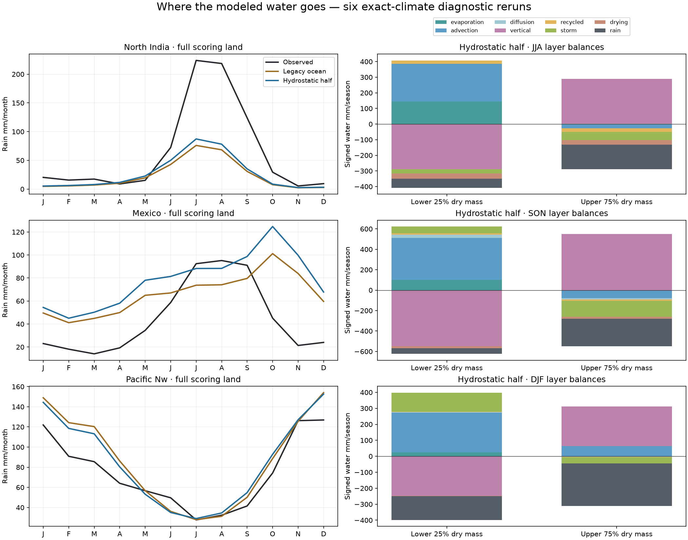
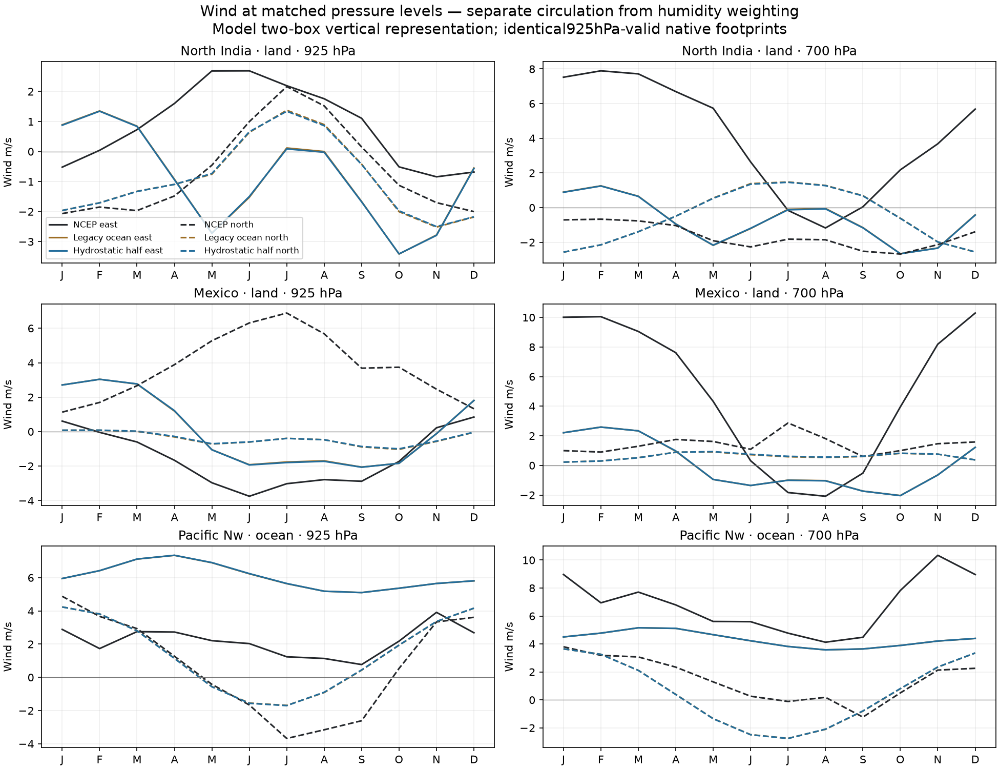
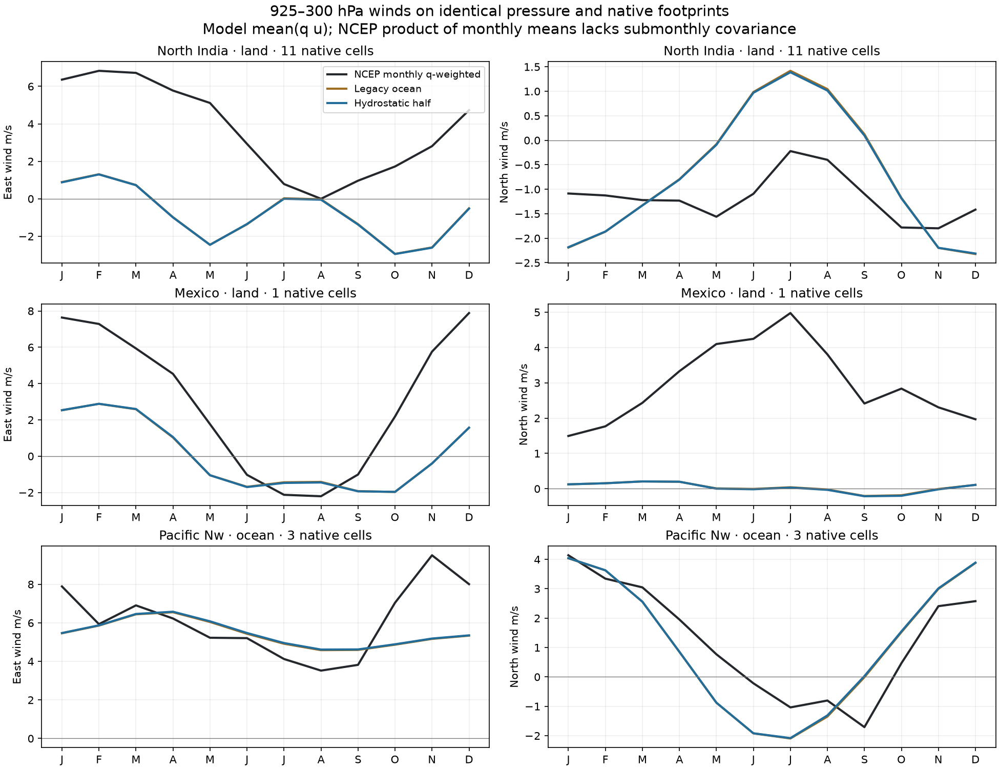
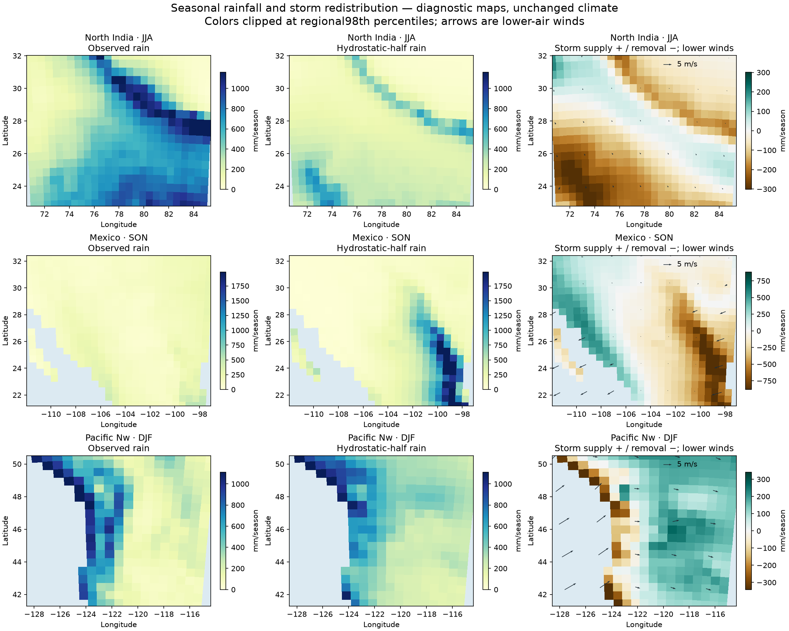
Coverage is limited:11 matched India land cells,1 Mexico land cell, no PNW land cells,1 Mexico ocean cell and3 PNW ocean cells. Below-ground925hPa comparisons are excluded without fallback. P/PW/winds use identical land pixels and calendar; full land budgets are separate from native metrics. NCEP/NCAR1981–2010 is model-assisted reanalysis; its monthly q×wind lacks submonthly covariance, and WorldClim rainfall has a different reference period. These development regions are not new independent validation. The two-box model does not resolve vertical momentum or energy, and inherited observed cloud/remote-monsoon backgrounds remain fixed.
All592 frozen inputs/sources,198 solved seasonal steps, exact climate archives, donor exchanges and rain equations were checked. Seven attempts produced six completed strict cases and one controller interruption: a tuple/list bookkeeping comparison was fixed without changing physics, parameters or original evidence. Cumulative counter:1886 attempts,1881 strict passes,4 earlier failures and1 interruption. Adopted Earth r39 and all world, biome and population maps remain unchanged.
Download complete monthly, seasonal, native, pressure-level and verification data · Design, recovery and interpretation · Rainfall recovery strategy
Hydrostatic ocean humidity and rainfall
Hydrostatic ocean humidity and rainfall
New research policy: numerical conservation, paired inputs, fixed Earth settings and declared actual parameters remain hard requirements. Rainfall, temperature, humidity, wind and sea-state prediction errors are explicit objectives. Modest regional regressions can accompany an average improvement; no individual prediction-error veto prunes the optimization path. Earlier acceptance decisions remain unchanged.
Two fixed background winds (4.5 and 3.5 m/s) each receive legacy, absolute hydrostatic uniform-RH, and half-taper RH ocean targets. Surface RH retains its calibrated value; total water is not renormalized. Actual sea temperatures drive the profiles and interior humidity remains independently solved. Four exact controls and a matched legacy epoch control protect existing behavior. No local proposals follow. 70 actual integrations completed, 70 passed numerics and 0 failed. All 28 historical controls reproduce their saved fields exactly. This finite search does not certify a global optimum.
The inherited regional setup retains observation-derived latitude/month cloud and remote monsoon-descent backgrounds, fixed across these comparisons. The new ocean target uses modeled SST and prescribed RH, without observed profile forcing. These are conditional regional tests, not independent global forecasts; the original declaration and inputs remain unchanged.
The next milestone diagnoses seasonal transport in North India, Mexico and PNW before another broad parameter search. Rainfall recovery plan · Download exploratory seasonal water budgets. These archived budgets add zero model runs and do not change acceptance decisions.
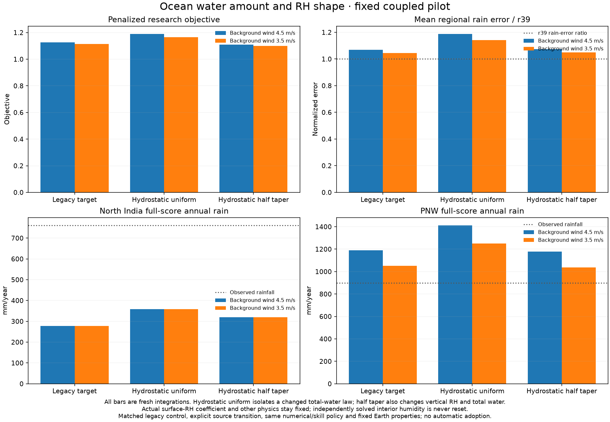
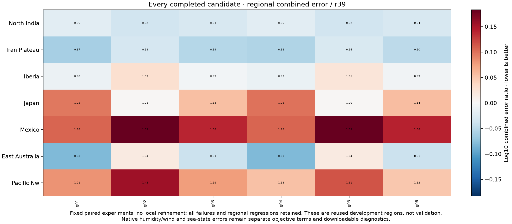
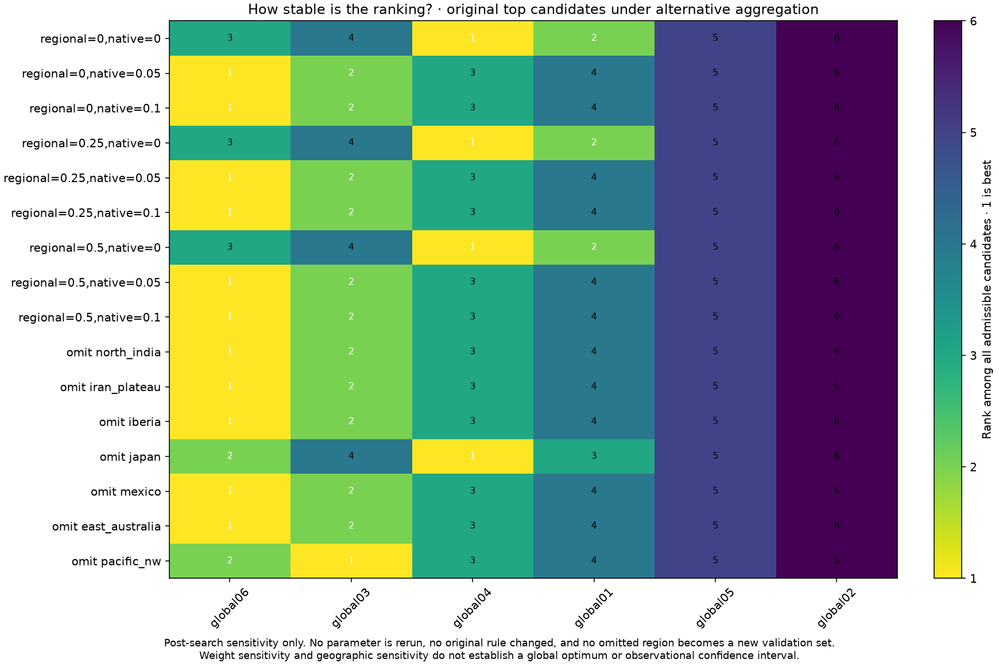
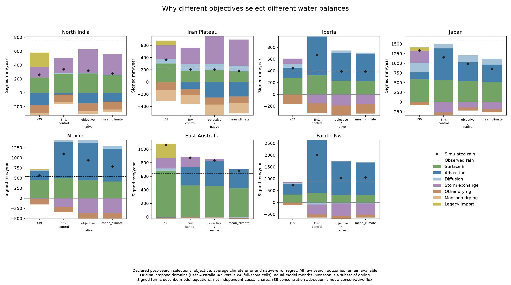
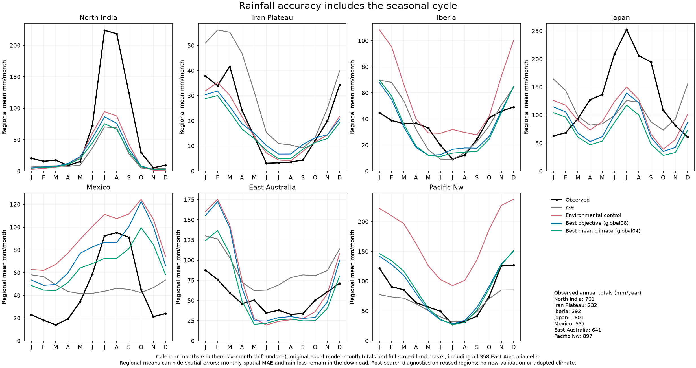
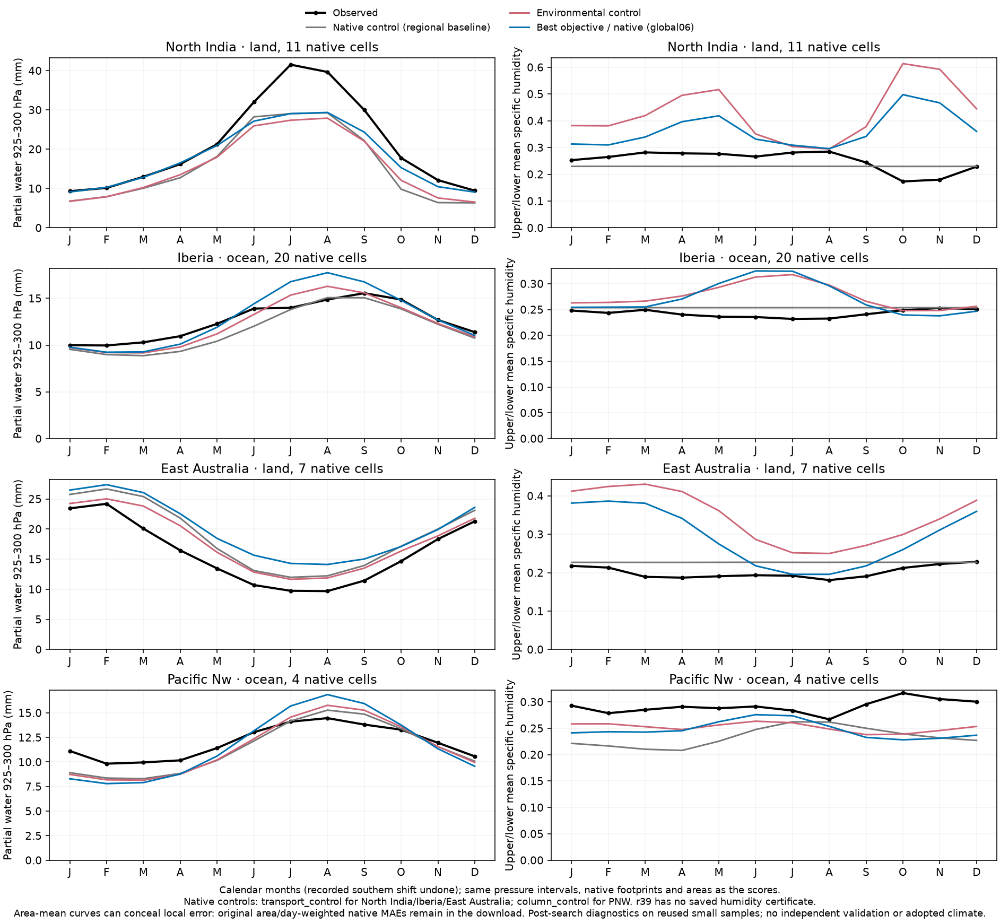
All research candidates; objective includes explicit regret penalties| Trial | Objective | Mean rain / r39 | Mean T / r39 | Worst region / r39 | Broader-validation shortlist eligible |
|---|
| global01 | 1.1257 | 1.0687 | 1.0358 | 1.2766 | No |
| global02 | 1.1888 | 1.1870 | 1.0757 | 1.5225 | No |
| global03 | 1.1096 | 1.0742 | 1.0488 | 1.3803 | No |
| global04 | 1.1145 | 1.0447 | 1.0438 | 1.2792 | No |
| global05 | 1.1646 | 1.1406 | 1.0827 | 1.5243 | No |
| global06 | 1.0994 | 1.0498 | 1.0570 | 1.3830 | No |
Non-dominated research candidates: global01, global03, global04, global06. At most two candidates may enter separately frozen broader validation: none. A shortlist is not an adopted fit. No normal climate, foraging, farming, population packet or measured accuracy headline is replaced.
Means use equal-region normalized errors. Reference-error floors are declared normalization choices, not measured observational uncertainties. Seven reused regions and small coastal samples cannot establish global skill. The prescribed environmental profile does not solve atmospheric radiation or latent-energy feedback.
Download complete hydrostatic ocean humidity and rainfall, tradeoffs, certificates and parameter histories · Design, objective and limitations
Joint global wind, rain and drying search
Joint global wind, rain and drying search
New research policy: numerical conservation, paired inputs, fixed Earth settings and declared actual parameters remain hard requirements. Rainfall, temperature, humidity, wind and sea-state prediction errors are explicit objectives. Modest regional regressions can accompany an average improvement; no individual prediction-error veto prunes the optimization path. Earlier acceptance decisions remain unchanged.
Thirty-two fixed scrambled Sobol points jointly cover storm exchange, rain timescale, convective RH, background wind amplitude and both legacy drying coefficients. Wind is separately extended to 2.5–8.5 m/s; drying ranges from zero to its retained strength. All remaining actual parameters and planetary properties stay fixed. No local proposals follow. 252 actual integrations completed, 252 passed numerics and 0 failed. All 28 historical controls reproduce their saved fields exactly. This finite search does not certify a global optimum.
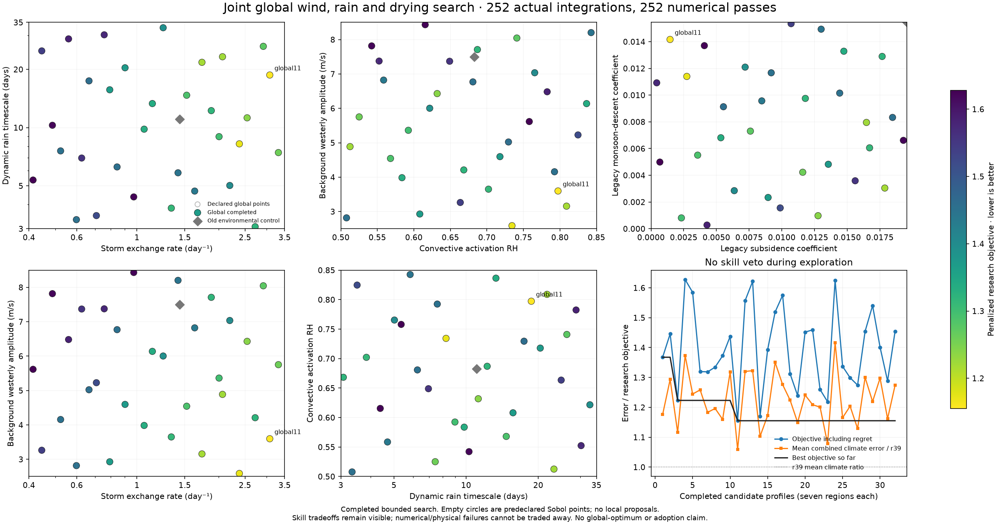
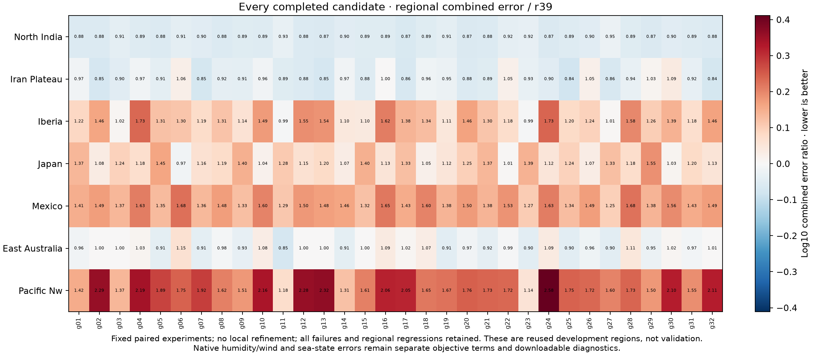
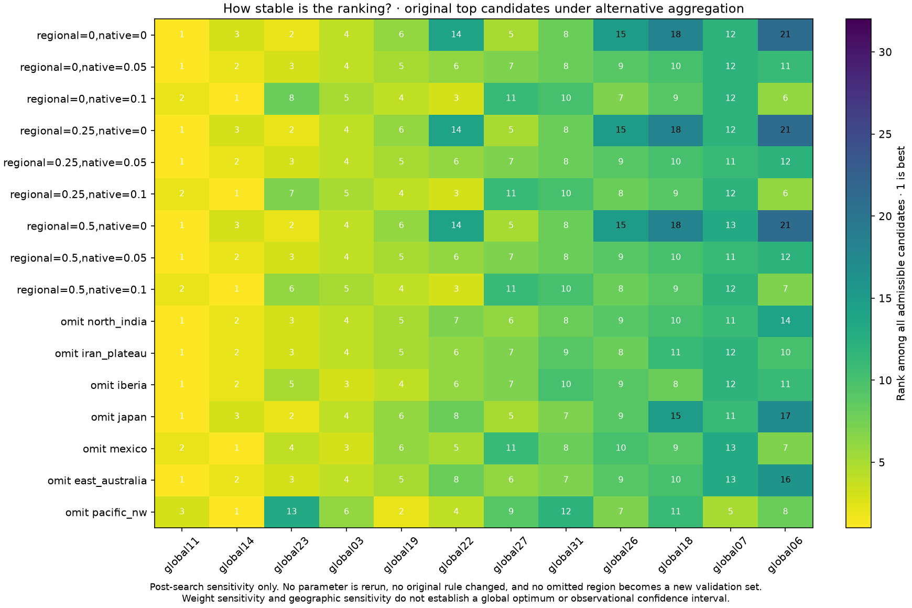
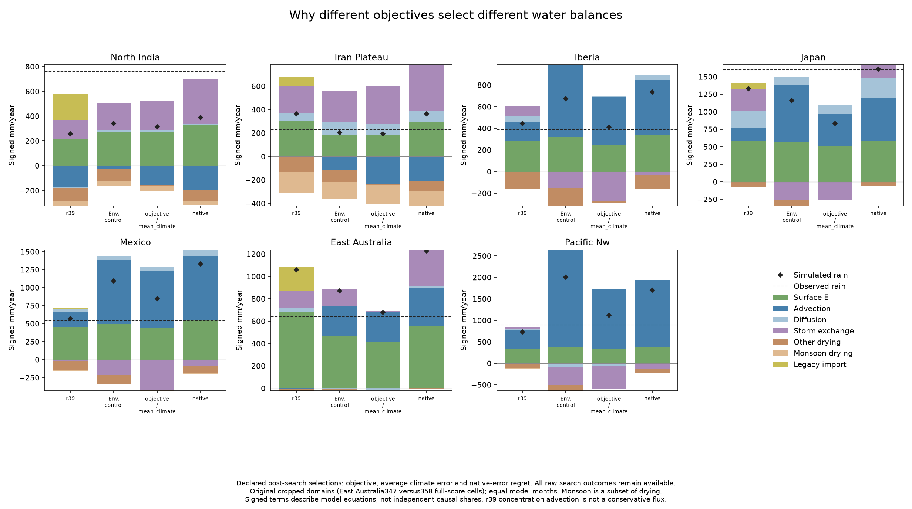
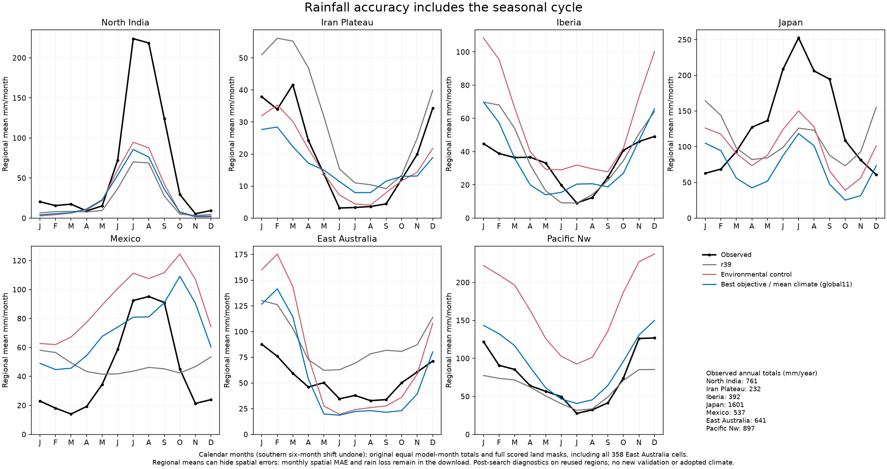
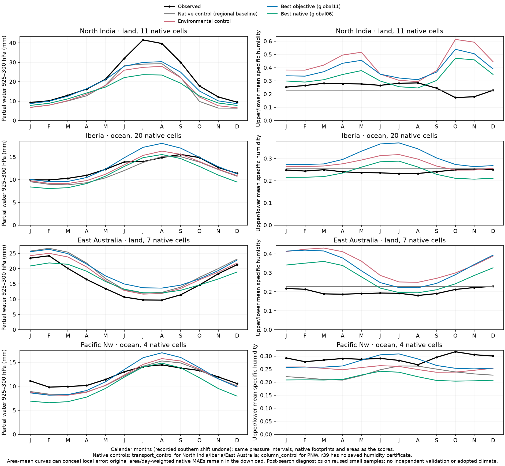
All research candidates; objective includes explicit regret penalties| Trial | Objective | Mean rain / r39 | Mean T / r39 | Worst region / r39 | Broader-validation shortlist eligible |
|---|
| global01 | 1.3678 | 1.2702 | 1.0822 | 1.4207 | No |
| global02 | 1.4460 | 1.5363 | 1.0503 | 2.2884 | No |
| global03 | 1.2233 | 1.1995 | 1.0339 | 1.3697 | No |
| global04 | 1.6278 | 1.6167 | 1.1292 | 2.1949 | No |
| global05 | 1.5849 | 1.4393 | 1.0498 | 1.8949 | No |
| global06 | 1.3197 | 1.4044 | 1.1127 | 1.7457 | No |
| global07 | 1.3189 | 1.3448 | 1.0218 | 1.9226 | No |
| global08 | 1.3347 | 1.3115 | 1.0811 | 1.6162 | No |
| global09 | 1.3727 | 1.2849 | 1.0348 | 1.5110 | No |
| global10 | 1.4373 | 1.5515 | 1.0844 | 2.1586 | No |
| global11 | 1.1552 | 1.0724 | 1.0460 | 1.2866 | No |
| global12 | 1.5572 | 1.5674 | 1.0729 | 2.2775 | No |
| global13 | 1.6216 | 1.5740 | 1.0716 | 2.3182 | No |
| global14 | 1.1706 | 1.1235 | 1.0834 | 1.4580 | No |
| global15 | 1.3928 | 1.3293 | 1.0155 | 1.6125 | No |
| global16 | 1.5191 | 1.5881 | 1.1132 | 2.0649 | No |
| global17 | 1.5751 | 1.4995 | 1.0529 | 2.0503 | No |
| global18 | 1.3123 | 1.3545 | 1.0936 | 1.6525 | No |
| global19 | 1.2394 | 1.2566 | 1.0425 | 1.6727 | No |
| global20 | 1.4519 | 1.3838 | 1.0985 | 1.7644 | No |
| global21 | 1.4592 | 1.3635 | 1.0545 | 1.7317 | No |
| global22 | 1.2596 | 1.3013 | 1.1000 | 1.7197 | No |
| global23 | 1.2186 | 1.1295 | 1.0268 | 1.3891 | No |
| global24 | 1.6254 | 1.7411 | 1.0923 | 2.5773 | No |
| global25 | 1.3372 | 1.3104 | 1.0204 | 1.7517 | No |
| global26 | 1.2991 | 1.3316 | 1.0762 | 1.7210 | No |
| global27 | 1.2745 | 1.2476 | 1.0103 | 1.5954 | No |
| global28 | 1.4542 | 1.4466 | 1.1537 | 1.7322 | No |
| global29 | 1.5407 | 1.3527 | 1.0859 | 1.5464 | No |
| global30 | 1.4012 | 1.5129 | 1.0833 | 2.1002 | No |
| global31 | 1.2882 | 1.2661 | 1.0580 | 1.5496 | No |
| global32 | 1.4544 | 1.4887 | 1.0589 | 2.1090 | No |
Non-dominated research candidates: global06, global11, global14, global22. At most two candidates may enter separately frozen broader validation: none. A shortlist is not an adopted fit. No normal climate, foraging, farming, population packet or measured accuracy headline is replaced.
Means use equal-region normalized errors. Reference-error floors are declared normalization choices, not measured observational uncertainties. Seven reused regions and small coastal samples cannot establish global skill. The prescribed environmental profile does not solve atmospheric radiation or latent-energy feedback.
Download complete joint global wind, rain and drying search, tradeoffs, certificates and parameter histories · Design, objective and limitations
Pressure-dependent marine humidity
Pressure-dependent marine humidity: a process test
Three fixed relative-humidity shapes share the same environmental 6 K/km temperature profile, observed 925 hPa temperature anchor, and 27 cached native ocean footprints. Actual humidity is withheld from construction. This comparison adds zero climate integrations and changes no running or adopted climate.
The half-strength pressure taper lowers the mean combined reference error by about 10.5% and mean humidity-shape MAE by about 20%. It strongly improves Iberia while the combined metric worsens at PNW and California. The full classical taper performs poorly overall. Average gains with regional regressions remain visible; neither result establishes a coupled rainfall response.
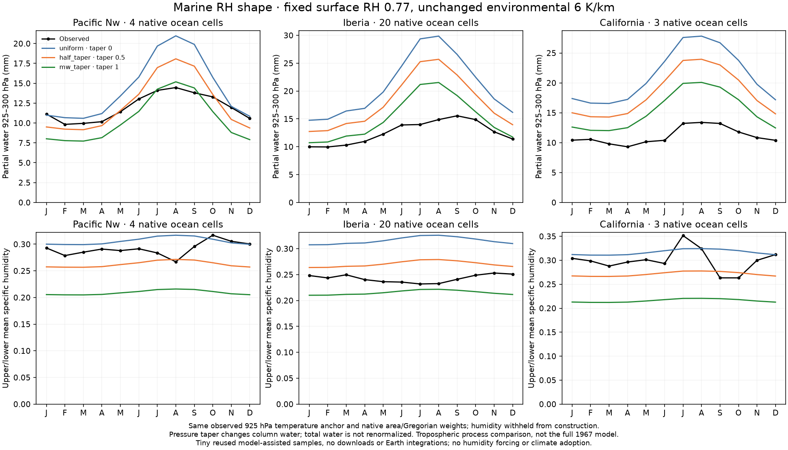
Reference-process comparison; baseline normalized to one| Fixed RH shape | Objective | Mean combined | Worst region | Mean shape MAE | Separate coupled-pilot support |
|---|
| uniform | 1.00000 | 1.00000 | 1.00000 | 0.03838 | No |
| half_taper | 0.89518 | 0.89487 | 1.11145 | 0.03055 | Reference support only |
| mw_taper | 1.87249 | 1.62245 | 2.49514 | 0.06490 | No |
Every regional water/shape error, including regressions| Native ocean sample | Shape | Partial-water MAE mm | Shape-ratio MAE | Combined / baseline |
|---|
| pacific nw | uniform | 2.390 | 0.01861 | 1.00000 |
| pacific nw | half_taper | 1.498 | 0.03053 | 1.11145 |
| pacific nw | mw_taper | 1.942 | 0.08216 | 2.49514 |
| iberia | uniform | 8.326 | 0.07317 | 1.00000 |
| iberia | half_taper | 5.439 | 0.02857 | 0.52186 |
| iberia | mw_taper | 2.859 | 0.02862 | 0.36722 |
| california | uniform | 10.074 | 0.02337 | 1.00000 |
| california | half_taper | 7.146 | 0.03256 | 1.05129 |
| california | mw_taper | 4.217 | 0.08394 | 2.00499 |
Surface RH is fixed at 0.77. The full pressure taper follows the tropospheric form in Manabe and Wetherald (1967), Eq. 2; the intermediate taper interpolates RH before integrating water. Total water is not renormalized. The uniform 0.77 baseline is a process comparator, not a reproduction of the calibrated current ocean target. The original paper's stratospheric floor and radiative-convective model are absent.
These 4 PNW, 20 Iberian and 3 Californian coarse ocean footprints were used before. They are model-assisted 1981–2010 reanalysis, not independent new validation, global skill or a monsoon-land test. Each native/month ratio is formed before averaging. Means can conceal local error; all area/day-weighted metrics and inputs remain downloadable. Reference support permits only a separately declared coupled pilot, never humidity forcing or adoption.
Download all marine RH inputs, native metrics and process decisions · Declaration, verification and limitations · Primary paper
Legacy drying and explicit vertical transport
Legacy drying and explicit vertical transport
New research policy: numerical conservation, paired inputs, fixed Earth settings and declared actual parameters remain hard requirements. Rainfall, temperature, humidity, wind and sea-state prediction errors are explicit objectives. Modest regional regressions can accompany an average improvement; no individual prediction-error veto prunes the optimization path. Earlier acceptance decisions remain unchanged.
The paired design switches off subsidence drying, monsoon drying, and both, at up to two separated retained wind/rain settings. Explicit conservative donor transport stays active. Parent anchors are archived comparisons, not new integrations. This tests a possible overlap, without assuming that removing a closure corrects the physics. No local refinement follows. 70 actual integrations completed, 70 passed numerics and 0 failed. All 28 historical controls reproduce their saved fields exactly. This finite search does not certify a global optimum.
The original declaration retains an anchor-selection bounds metadata error from a shallow copy. The literal trial grid was frozen before execution; verification reconstructs selection in the committed parent space. Runs, parameters and scores are unchanged. See the report and downloadable verification notes.
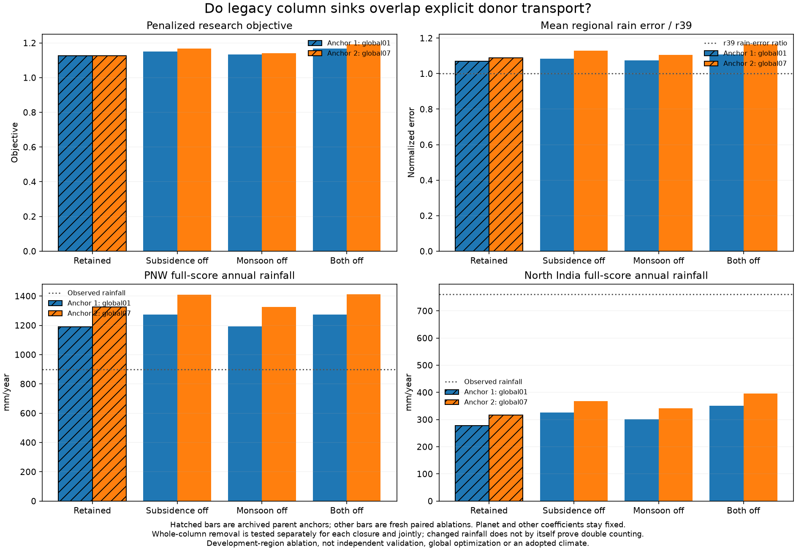
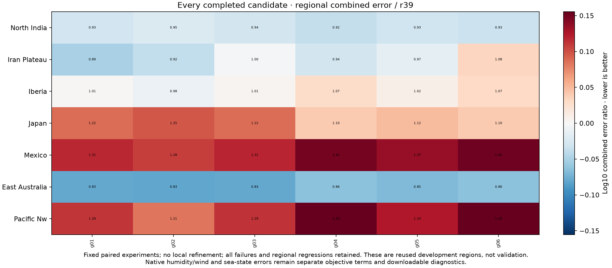
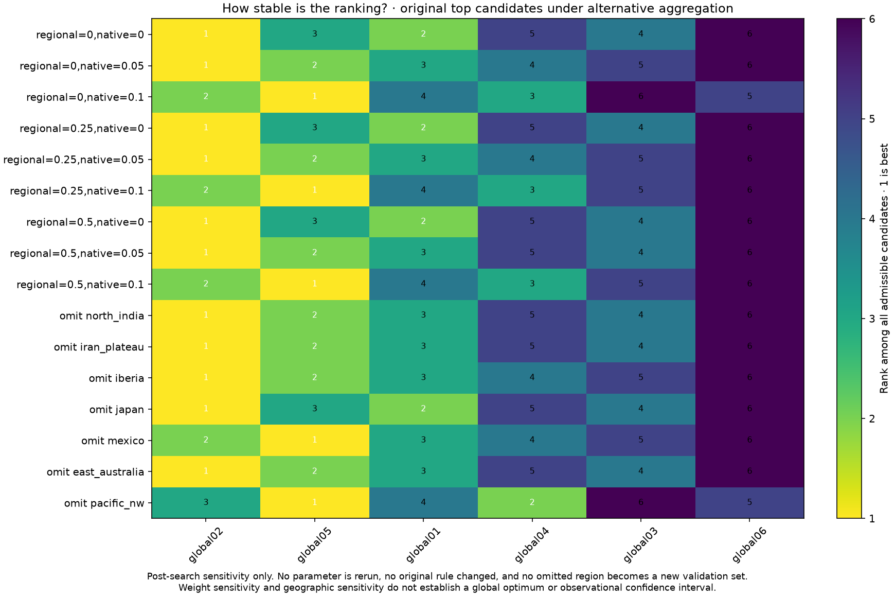
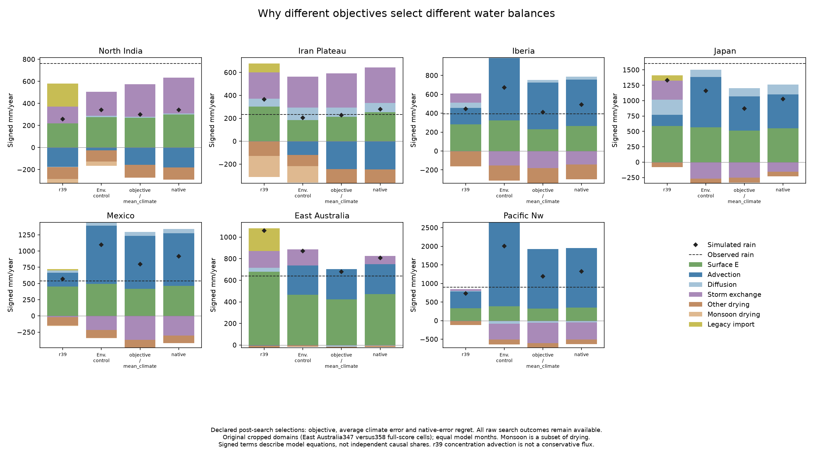
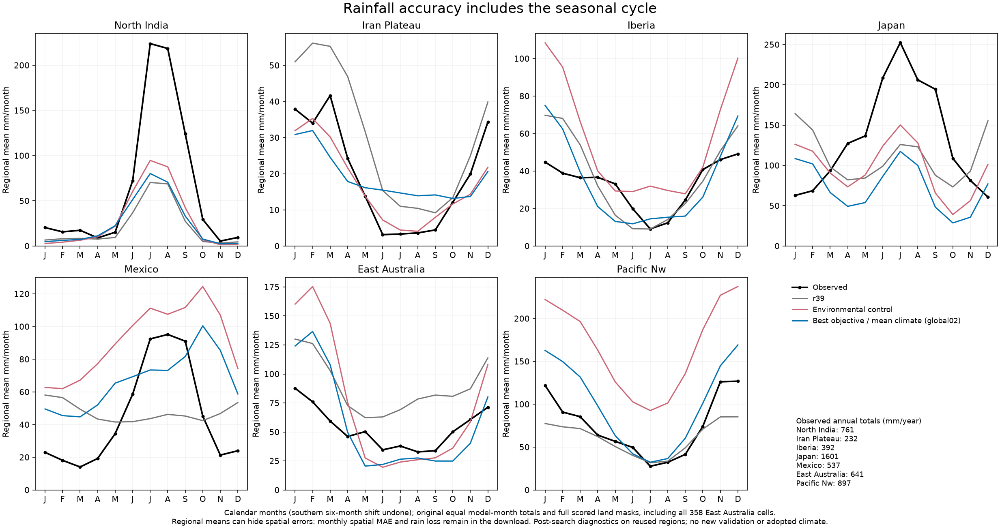
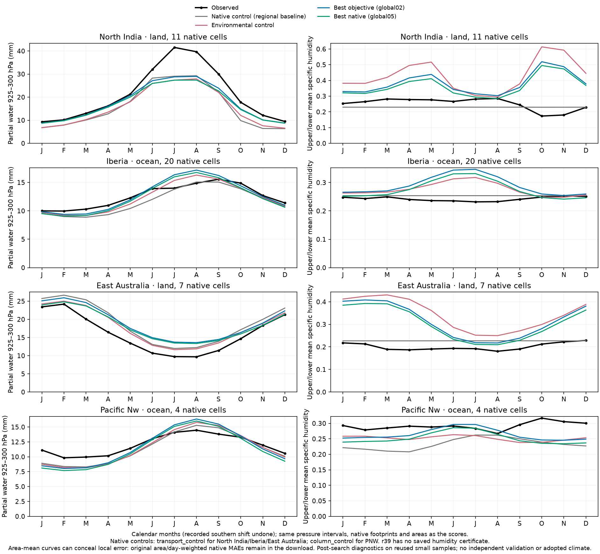
All research candidates; objective includes explicit regret penalties| Trial | Objective | Mean rain / r39 | Mean T / r39 | Worst region / r39 | Broader-validation shortlist eligible |
|---|
| global01 | 1.1512 | 1.0845 | 1.0538 | 1.3089 | No |
| global02 | 1.1325 | 1.0753 | 1.0435 | 1.2811 | No |
| global03 | 1.1682 | 1.1079 | 1.0644 | 1.3148 | No |
| global04 | 1.1669 | 1.1289 | 1.0777 | 1.4277 | No |
| global05 | 1.1399 | 1.1056 | 1.0631 | 1.3656 | No |
| global06 | 1.1912 | 1.1643 | 1.0902 | 1.4303 | No |
Non-dominated research candidates: global02, global05. At most two candidates may enter separately frozen broader validation: none. A shortlist is not an adopted fit. No normal climate, foraging, farming, population packet or measured accuracy headline is replaced.
Means use equal-region normalized errors. Reference-error floors are declared normalization choices, not measured observational uncertainties. Seven reused regions and small coastal samples cannot establish global skill. The prescribed environmental profile does not solve atmospheric radiation or latent-energy feedback.
Download complete legacy drying and explicit vertical transport, tradeoffs, certificates and parameter histories · Design, objective and limitations
Wind and rain-setting interactions
Wind and rain-setting interactions
New research policy: numerical conservation, paired inputs, fixed Earth settings and declared actual parameters remain hard requirements. Rainfall, temperature, humidity, wind and sea-state prediction errors are explicit objectives. Modest regional regressions can accompany an average improvement; no individual prediction-error veto prunes the optimization path. Earlier acceptance decisions remain unchanged.
The paired design tests three shared background westerly amplitudes (4.5, 6.0 and 8.5 m/s) at up to three separated rain settings selected from the completed parent search. Original 7.5 m/s results are archived comparisons, not additional integrations. No local refinement follows this bracket. 91 actual integrations completed, 91 passed numerics and 0 failed. All 28 historical controls reproduce their saved fields exactly. This finite search does not certify a global optimum.
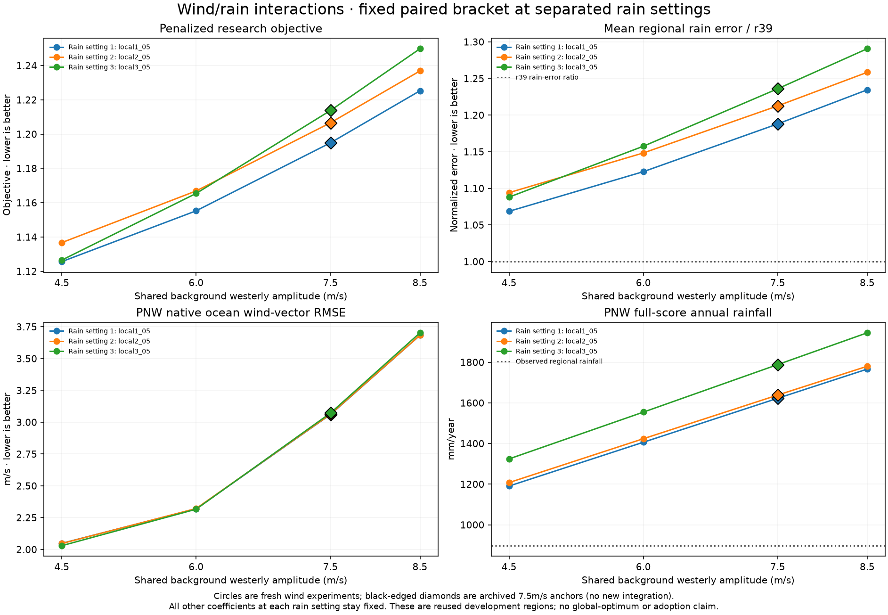
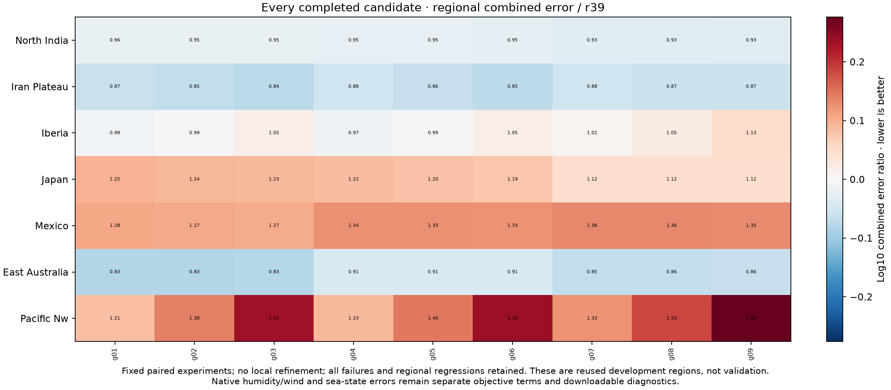
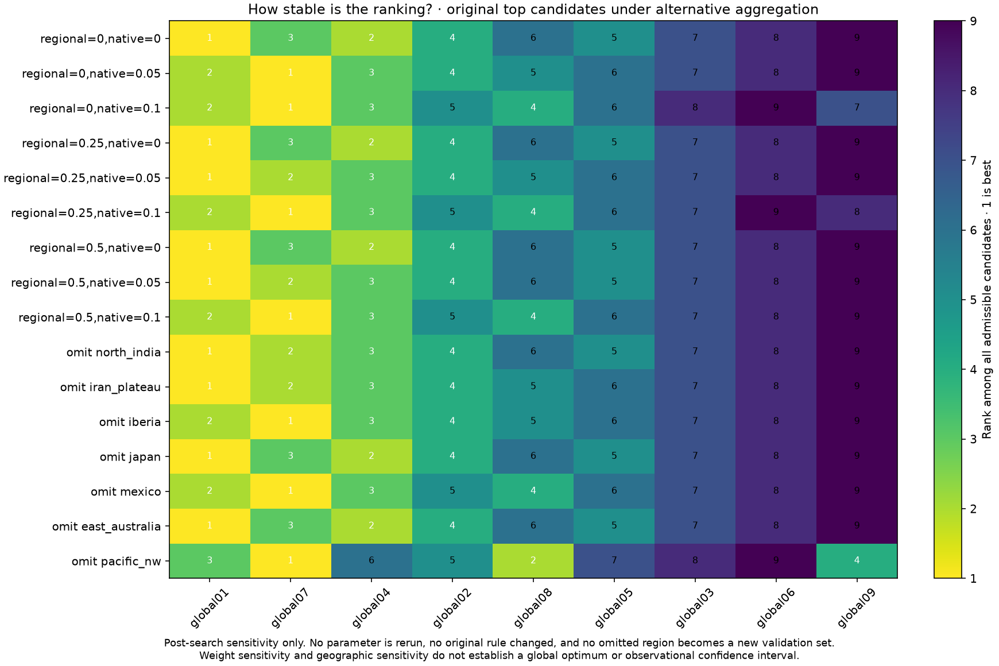
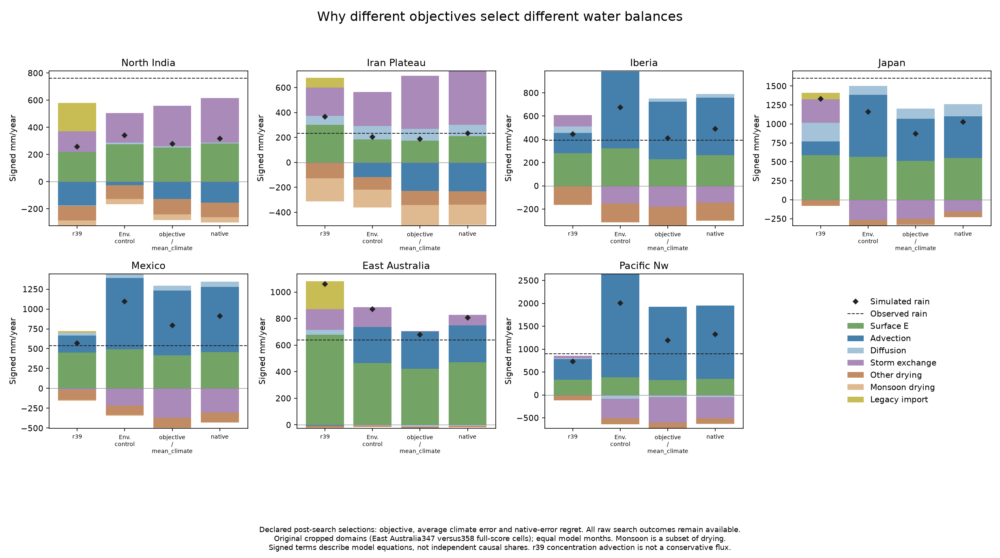
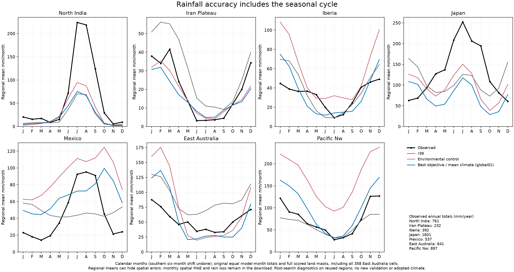
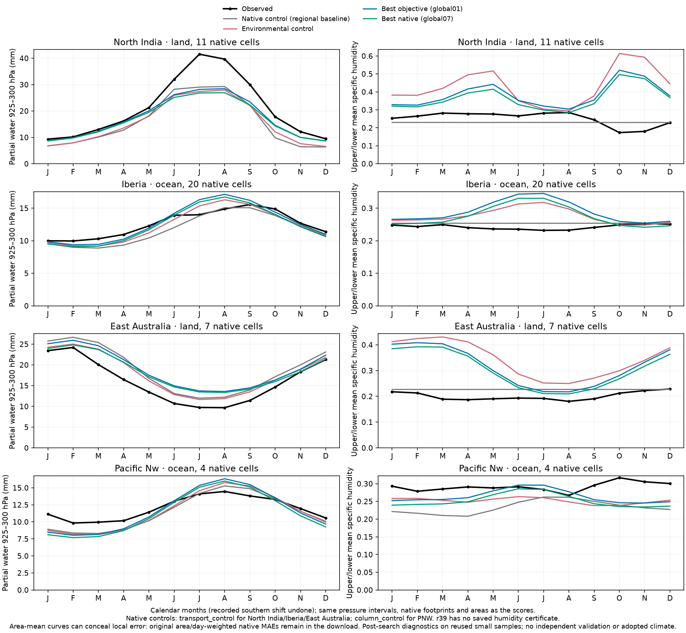
All research candidates; objective includes explicit regret penalties| Trial | Objective | Mean rain / r39 | Mean T / r39 | Worst region / r39 | Broader-validation shortlist eligible |
|---|
| global01 | 1.1257 | 1.0687 | 1.0358 | 1.2766 | No |
| global02 | 1.1553 | 1.1228 | 1.0271 | 1.3794 | No |
| global03 | 1.2253 | 1.2345 | 1.0179 | 1.7135 | No |
| global04 | 1.1368 | 1.0942 | 1.0434 | 1.3385 | No |
| global05 | 1.1669 | 1.1483 | 1.0350 | 1.4003 | No |
| global06 | 1.2369 | 1.2584 | 1.0265 | 1.7315 | No |
| global07 | 1.1266 | 1.0881 | 1.0539 | 1.3590 | No |
| global08 | 1.1654 | 1.1575 | 1.0461 | 1.5254 | No |
| global09 | 1.2498 | 1.2906 | 1.0377 | 1.8886 | No |
Non-dominated research candidates: global01, global04, global07. At most two candidates may enter separately frozen broader validation: none. A shortlist is not an adopted fit. No normal climate, foraging, farming, population packet or measured accuracy headline is replaced.
Means use equal-region normalized errors. Reference-error floors are declared normalization choices, not measured observational uncertainties. Seven reused regions and small coastal samples cannot establish global skill. The prescribed environmental profile does not solve atmospheric radiation or latent-energy feedback.
Download complete wind and rain-setting interactions, tradeoffs, certificates and parameter histories · Design, objective and limitations
Broader rainfall search and regional tradeoffs
Broader rainfall search and regional tradeoffs
New research policy: numerical conservation, paired inputs, fixed Earth settings and declared actual parameters remain hard requirements. Rainfall, temperature, humidity, wind and sea-state prediction errors are explicit objectives. Modest regional regressions can accompany an average improvement; no individual prediction-error veto prunes the optimization path. Earlier acceptance decisions remain unchanged.
The frozen design covers 32 scrambled Sobol points over wider shared storm/rain-timescale/convective-RH ranges, then up to three separated starts with six bounded coordinate proposals each. Exact duplicate proposals reuse records. 371 actual integrations completed, 371 passed numerics and 0 failed. All 28 historical controls reproduce their saved fields exactly. This finite search does not certify a global optimum.
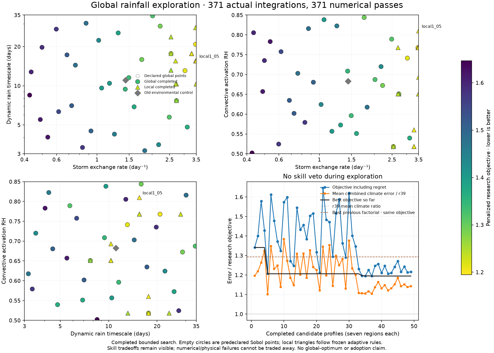
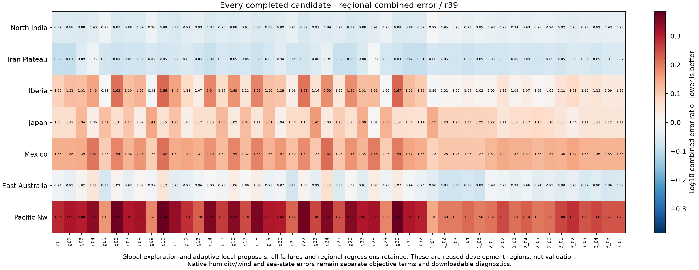
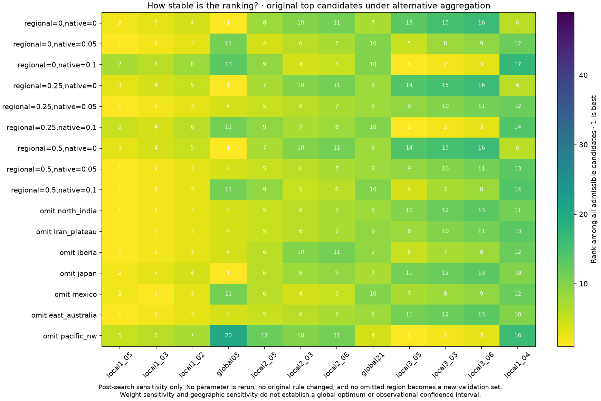
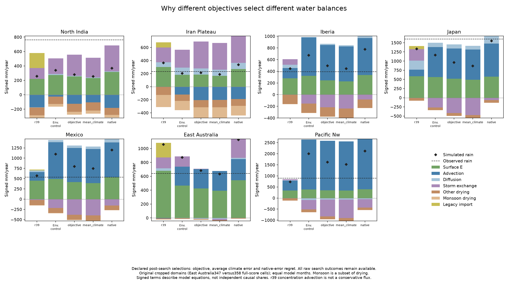
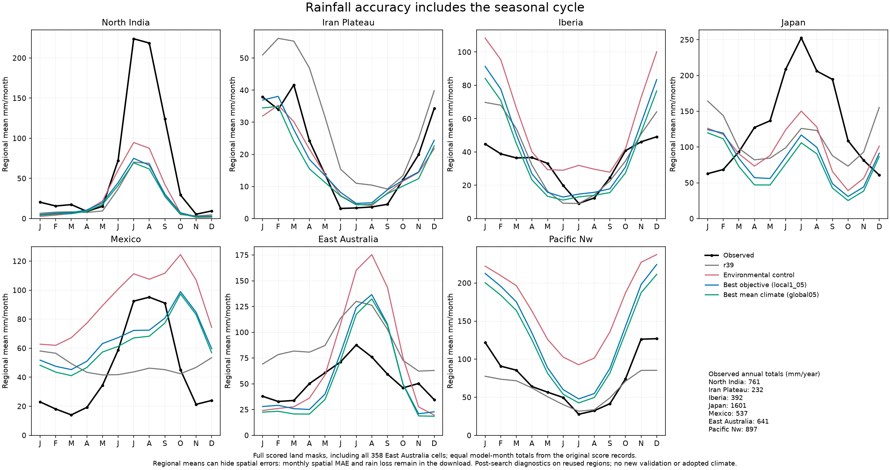
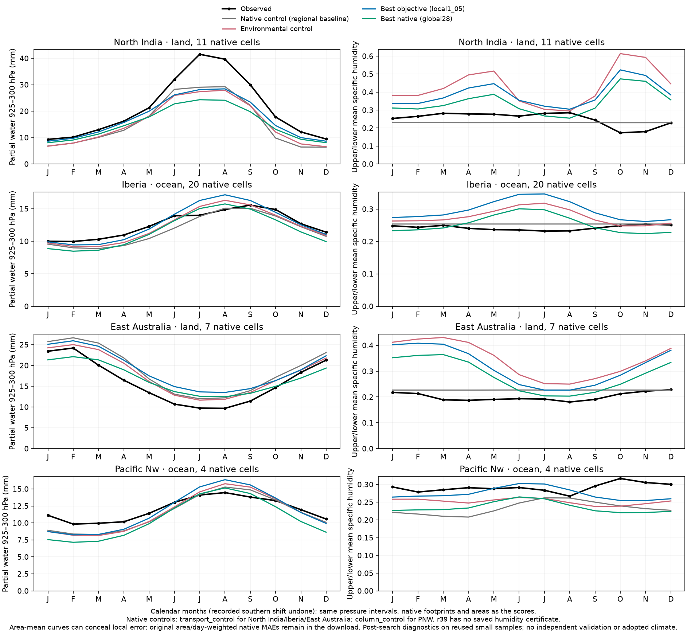
All research candidates; objective includes explicit regret penalties| Trial | Objective | Mean rain / r39 | Mean T / r39 | Worst region / r39 | Broader-validation shortlist eligible |
|---|
| global01 | 1.3412 | 1.3719 | 1.0201 | 1.9430 | No |
| global02 | 1.4001 | 1.4136 | 1.0252 | 2.0499 | No |
| global03 | 1.5789 | 1.4876 | 1.0387 | 2.0025 | No |
| global04 | 1.4291 | 1.5771 | 1.0717 | 2.2089 | No |
| global05 | 1.2066 | 1.1897 | 1.0127 | 1.4796 | No |
| global06 | 1.6126 | 1.6154 | 1.0799 | 2.3731 | No |
| global07 | 1.4789 | 1.4373 | 1.0247 | 2.0361 | No |
| global08 | 1.3720 | 1.4517 | 1.0453 | 2.0899 | No |
| global09 | 1.3233 | 1.2893 | 0.9890 | 1.5266 | No |
| global10 | 1.5740 | 1.6869 | 1.0807 | 2.4002 | No |
| global11 | 1.5984 | 1.4970 | 1.0500 | 2.1703 | No |
| global12 | 1.2715 | 1.3303 | 1.0413 | 1.9068 | No |
| global13 | 1.2469 | 1.2706 | 1.0248 | 1.7008 | No |
| global14 | 1.5451 | 1.5551 | 1.0624 | 2.2866 | No |
| global15 | 1.4330 | 1.3956 | 1.0080 | 1.8634 | No |
| global16 | 1.4562 | 1.5637 | 1.0572 | 2.2464 | No |
| global17 | 1.3841 | 1.3663 | 1.0046 | 1.7800 | No |
| global18 | 1.5039 | 1.5884 | 1.0636 | 2.2987 | No |
| global19 | 1.5160 | 1.4545 | 1.0274 | 2.0289 | No |
| global20 | 1.3169 | 1.4032 | 1.0488 | 2.0186 | No |
| global21 | 1.2132 | 1.2223 | 1.0192 | 1.6784 | No |
| global22 | 1.6463 | 1.6034 | 1.0862 | 2.3459 | No |
| global23 | 1.4837 | 1.3898 | 1.0045 | 1.8019 | No |
| global24 | 1.4720 | 1.6325 | 1.0751 | 2.2712 | No |
| global25 | 1.2939 | 1.2887 | 0.9993 | 1.7640 | No |
| global26 | 1.5163 | 1.5382 | 1.0583 | 2.2478 | No |
| global27 | 1.5886 | 1.4671 | 1.0337 | 2.0391 | No |
| global28 | 1.3629 | 1.4764 | 1.0886 | 2.0926 | No |
| global29 | 1.2899 | 1.2680 | 0.9922 | 1.5374 | No |
| global30 | 1.6206 | 1.6672 | 1.0844 | 2.4240 | No |
| global31 | 1.4013 | 1.4342 | 1.0333 | 2.0532 | No |
| global32 | 1.3467 | 1.3808 | 1.0216 | 1.9867 | No |
| local1_01 | 1.2311 | 1.2066 | 1.0081 | 1.3957 | No |
| local1_02 | 1.1964 | 1.1910 | 1.0210 | 1.5811 | No |
| local1_03 | 1.1956 | 1.1900 | 1.0215 | 1.5792 | No |
| local1_04 | 1.2258 | 1.2261 | 1.0071 | 1.6468 | No |
| local1_05 | 1.1949 | 1.1880 | 1.0209 | 1.5771 | No |
| local2_01 | 1.2471 | 1.2575 | 1.0183 | 1.6131 | No |
| local2_02 | 1.2568 | 1.2965 | 1.0332 | 1.7957 | No |
| local2_03 | 1.2110 | 1.2240 | 1.0395 | 1.6252 | No |
| local2_04 | 1.2469 | 1.2706 | 1.0248 | 1.7008 | No |
| local2_05 | 1.2066 | 1.2126 | 1.0293 | 1.5967 | No |
| local2_06 | 1.2110 | 1.2240 | 1.0395 | 1.6252 | No |
| local3_01 | 1.2421 | 1.2762 | 1.0269 | 1.8010 | No |
| local3_02 | 1.2715 | 1.3303 | 1.0413 | 1.9068 | No |
| local3_03 | 1.2166 | 1.2413 | 1.0430 | 1.7486 | No |
| local3_04 | 1.2434 | 1.2778 | 1.0264 | 1.8035 | No |
| local3_05 | 1.2138 | 1.2360 | 1.0405 | 1.7418 | No |
| local3_06 | 1.2166 | 1.2413 | 1.0430 | 1.7486 | No |
Non-dominated research candidates: global05, global20, global21, global28, local1_01, local1_03, local1_05, local2_03, local2_05, local2_06, local3_03, local3_05, local3_06. At most two candidates may enter separately frozen broader validation: none. A shortlist is not an adopted fit. No normal climate, foraging, farming, population packet or measured accuracy headline is replaced.
Means use equal-region normalized errors. Reference-error floors are declared normalization choices, not measured observational uncertainties. Seven reused regions and small coastal samples cannot establish global skill. The prescribed environmental profile does not solve atmospheric radiation or latent-energy feedback.
Download complete broader rainfall search and regional tradeoffs, tradeoffs, certificates and parameter histories · Design, objective and limitations
Joint storm and rain calibration
Joint storm and rain calibration
The earlier empirical rain coefficients were calibrated with older water equations. This fixed eight-corner design varies three shared coefficients together on conservative independent layer water: storm exchange rate, local dynamic rain timescale and whole-column convective humidity threshold. Every trial retains the reference-qualified 6.0 K/km environmental capacity profile, 7.5 m/s background westerlies, corrected column convection and falling-rain recycling, and no vertical mixing. All other shared coefficients and Earth forcing remain fixed.
Storm rate also changes heat exchange. Temperature, modeled SST and winds respond and face their unchanged protections. Actual lower/upper humidity remains solved. The coefficients describe empirical sensitivities; the design does not establish an optimum or solve vertical radiation, environmental latent heating or saturated plume dynamics. All eight combinations and failures remain visible.
Predeclared coefficients; storm rate is before the existing storm envelope| Profile | Storm rate day⁻¹ | Dynamic rain timescale days | Convective RH threshold |
|---|
| Environmental control | 1.43415 | 11.0786 | 0.682915 |
| rain01 | 1 | 8 | 0.65 |
| rain02 | 1 | 8 | 0.72 |
| rain03 | 1 | 15 | 0.65 |
| rain04 | 1 | 15 | 0.72 |
| rain05 | 1.8 | 8 | 0.65 |
| rain06 | 1.8 | 8 | 0.72 |
| rain07 | 1.8 | 15 | 0.65 |
| rain08 | 1.8 | 15 | 0.72 |
The existing three-region thermal/capacity reference is an additional fixed guard for every candidate. Its complete 6.0-pass and 6.5-failure reviews and hash bindings are retained in this study's download. This round reuses that reference and adds no reference climate integrations or standalone map topic. Humidity and rain remain separate observed constraints.
The independent steady water states share a stationary dry-air column with25% lower and75% upper mass. Actual spatial water fractions feed donor faces and diagnostic vapor winds. There is no independently solved vertical temperature, latent heating or atmospheric time storage.
The pilot attempts 84 integrations: 84 pass strict numerics and 0 fail. Original and historical physical controls must reproduce their archived fields before candidates. No profile passed all fixed safeguards. No adopted profile, headline score or atlas climate is replaced by this research page.
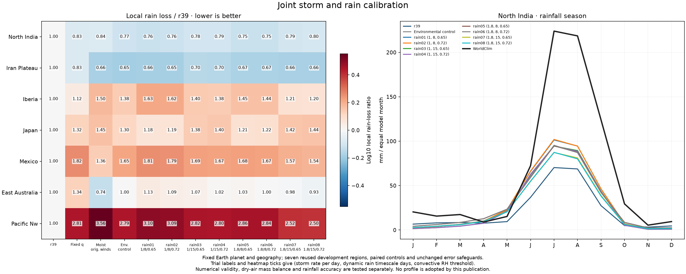
Every trial faces rain, temperature, regional, ocean, outside-wind, mass and separate-branch speed safeguards. Separate upwinding adds grid-dependent first-order mixing; it is not a measured physical diffusivity. Control details and all numerical certificates are in the download.
North India, identical scored cells| Profile | Annual rain mm | Monthly rain MAE mm | Wind RMSE m/s |
|---|
| r39 | 256 | 50.01 | 7.21 |
| Fixed-profile transport | 345 | 43.67 | 5.42 |
| Moist partition, original winds | 272 | 44.65 | 5.39 |
| Environmental 6 K/km, original rain closures | 341 | 42.80 | 5.40 |
| Storm 1/day; rain tau 8 d; convective RH 0.65 | 363 | 42.47 | 5.39 |
| Storm 1/day; rain tau 8 d; convective RH 0.72 | 364 | 42.50 | 5.39 |
| Storm 1/day; rain tau 15 d; convective RH 0.65 | 334 | 43.14 | 5.40 |
| Storm 1/day; rain tau 15 d; convective RH 0.72 | 333 | 43.29 | 5.40 |
| Storm 1.8/day; rain tau 8 d; convective RH 0.65 | 352 | 42.46 | 5.40 |
| Storm 1.8/day; rain tau 8 d; convective RH 0.72 | 353 | 42.46 | 5.40 |
| Storm 1.8/day; rain tau 15 d; convective RH 0.65 | 315 | 43.48 | 5.41 |
| Storm 1.8/day; rain tau 15 d; convective RH 0.72 | 313 | 43.64 | 5.41 |
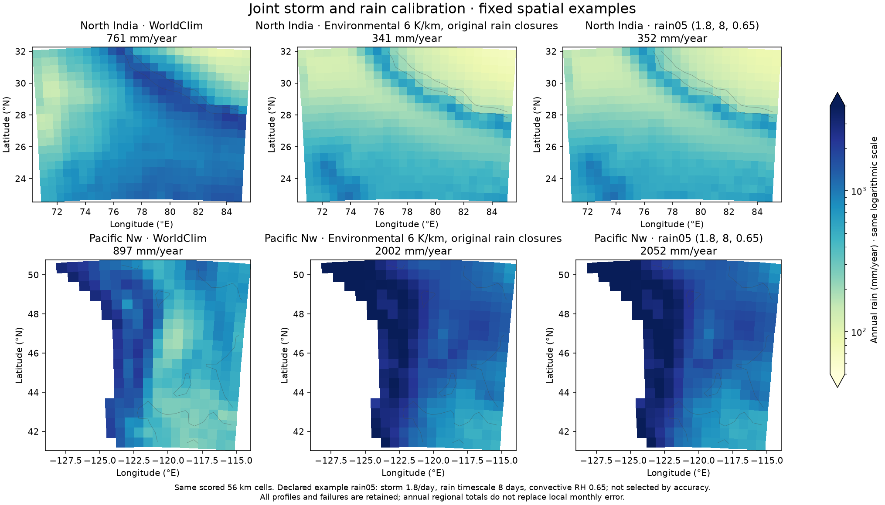
These fixed examples expose spatial tradeoffs. All ratios and failures remain in the results; closer annual totals can still hide worse local rain.
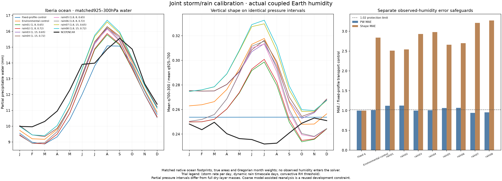
Matched pressure ranges exclude air below 925 hPa and above 300 hPa. Each observed-water and shape MAE must remain within 2% of the common-mass fixed-profile control. A closer rainfall total cannot pay for worse humidity physics.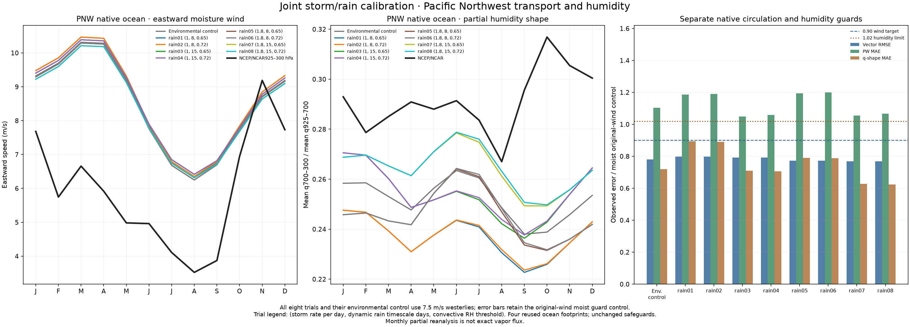
All eight declared storm/rain combinations and the environmental control use the same 6.0 K/km capacity profile and 7.5 m/s background westerlies. The error-ratio bars and thresholds retain the corrected moist original-wind column_control. The environmental control is a failed research baseline, not a replacement qualification denominator. Wind vector RMSE must fall to at most 90% of the guard control; partial water and vertical-shape MAEs each may reach at most 102%. These distinct limits use only four reused native ocean footprints. Missing or failed diagnostics are marked; full screening failures remain in the download. The native partial-column reference and modeled whole-column moisture wind differ in vertical coverage and omit transient moisture covariance.
The model retains approximate hydrostatic mass, flat projected geometry, a fixed lower mass fraction and independently solved humidity in two broad dry layers. Reanalysis constraints cover only a monthly925–300hPa partial column and omit transient moisture covariance. Reused development regions are not new independent validation.
Download joint storm and rain calibration results · Method, results and limitations
Environmental temperature and moisture capacity partition
Environmental temperature and moisture capacity partition
Fixed environmental lapse profiles of 6.0/6.5 K/km replace the saturated moist profile only when normalizing lower/upper capacity and ocean boundary-supply fractions. The environmental lapse is separate from surface-elevation cooling. Both candidates and their matched moist control use the same 7.5 m/s background amplitude, corrected column convection/rain recycling and independent water without vertical mixing. The calibrated total capacity and ocean-equilibrium schemes remain fixed while the coupled state responds. Actual layer humidity remains solved, with every layer and column certificate retained; no observed temperature enters these climate integrations and no humidity reset is imposed.
A saturated plume lapse is a thermal hypothesis rather than an environmental energy solution. Separate reference checks anchored at observed 925 hPa temperature compare withheld temperatures and saturation shape at observed temperatures, preserving all failures. Those diagnostics do not equate capacity with actual humidity or establish rainfall attribution. No vertical radiation, parcel latent-energy feedback or global thermal validation is added.
The independent steady water states share a stationary dry-air column with25% lower and75% upper mass. Actual spatial water fractions feed donor faces and diagnostic vapor winds. There is no independently solved vertical temperature, latent heating or atmospheric time storage.
The pilot attempts 42 integrations: 42 pass strict numerics and 0 fail. Original and historical physical controls must reproduce their archived fields before candidates. No profile passed all fixed safeguards. No adopted profile, headline score or atlas climate is replaced by this research page.
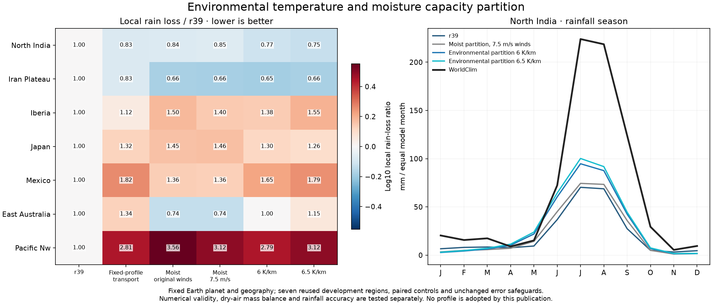
Every trial faces rain, temperature, regional, ocean, outside-wind, mass and separate-branch speed safeguards. Separate upwinding adds grid-dependent first-order mixing; it is not a measured physical diffusivity. Control details and all numerical certificates are in the download.
North India, identical scored cells| Profile | Annual rain mm | Monthly rain MAE mm | Wind RMSE m/s |
|---|
| r39 | 256 | 50.01 | 7.21 |
| Fixed-profile transport | 345 | 43.67 | 5.42 |
| Moist partition, original winds | 272 | 44.65 | 5.39 |
| Moist partition, 7.5 m/s winds | 272 | 44.70 | 5.39 |
| Environmental partition 6 K/km | 341 | 42.80 | 5.40 |
| Environmental partition 6.5 K/km | 362 | 42.49 | 5.40 |
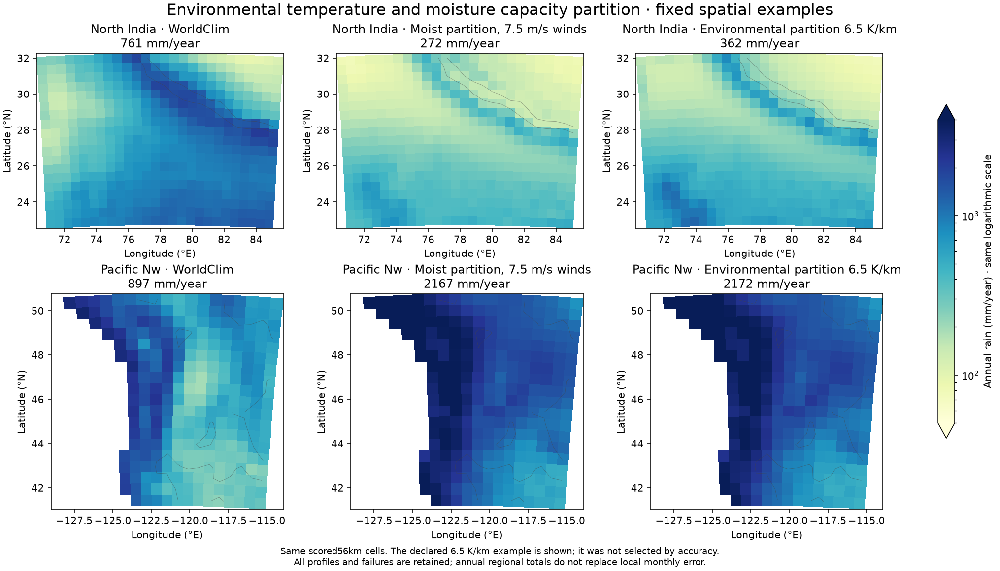
These fixed examples expose spatial tradeoffs. All ratios and failures remain in the results; closer annual totals can still hide worse local rain.
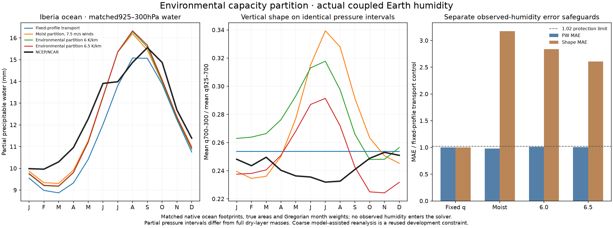
Matched pressure ranges exclude air below925hPa and above300hPa. Each observed-water and shape MAE must remain within2% of the common-mass fixed-profile control. A closer rainfall total cannot pay for worse humidity physics.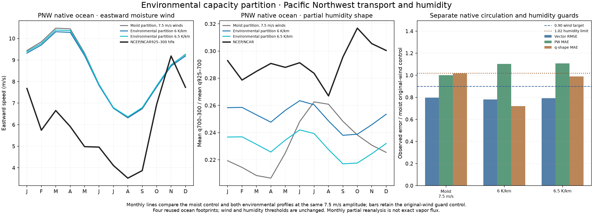
The monthly lines compare both environmental partitions with the moist partition at the same 7.5 m/s amplitude. Error-ratio bars and thresholds retain the frozen moist control with original winds; the matched-wind figure comparison does not change qualification. Wind vector RMSE must fall to at most 90% of the guard control; partial water and vertical-shape MAEs each may reach at most 102%. These distinct limits use only four reused native ocean footprints. Missing or failed diagnostics are marked; full screening failures remain in the download. The native partial-column reference and modeled whole-column moisture wind differ in vertical coverage and omit transient moisture covariance.
The model retains approximate hydrostatic mass, flat projected geometry, a fixed lower mass fraction and independently solved humidity in two broad dry layers. Reanalysis constraints cover only a monthly925–300hPa partial column and omit transient moisture covariance. Reused development regions are not new independent validation.
Separate reference check: environmental temperature and saturation shape
Zero Earth integrations, fitted coefficients or humidity resets. The same four PNW, twenty Iberian and three Californian ocean footprints receive only observed 925 hPa temperature as an anchor. Temperatures at 850–300 hPa and all humidity are withheld from profile construction. Fixed 6.0/6.5 K/km environmental profiles and the saturated moist profile use identical pressure nodes, native physical areas and Gregorian month weights.
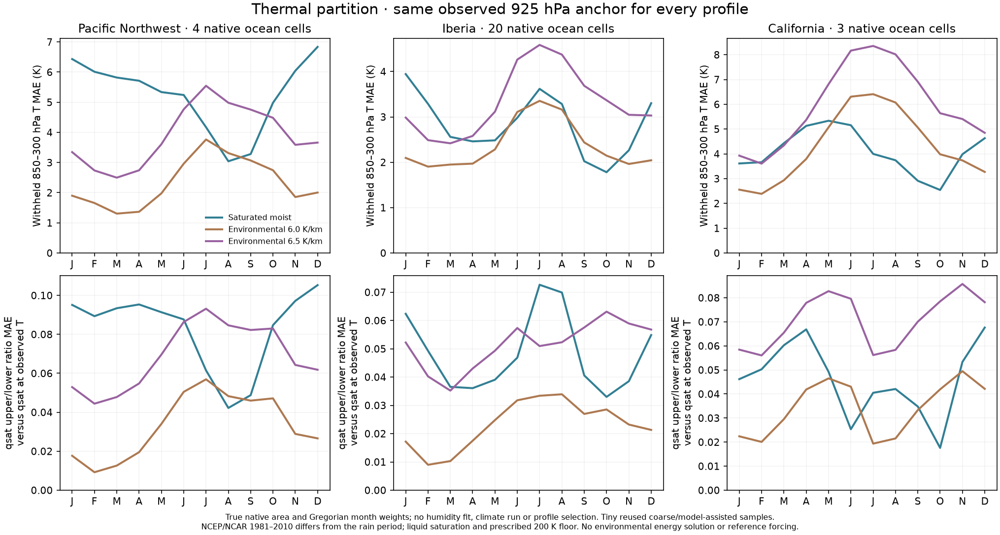
All three fixed profiles are shown. Saturation-shape errors compare predicted capacity with saturation at observed temperature, separately from actual humidity. The observed anchor, liquid saturation and prescribed 200 K floor do not solve environmental energy or saturated plume dynamics.
Equal-region mean withheld-temperature MAE for the moist hypothesis is 4.055 K, and its saturation-shape MAE is 0.05905. The 6.0 K/km profile passes the fixed reference checks. The 6.5 K/km profile fails five checks, including the mean-temperature improvement guard. Every regional and aggregate failure remains below and in the complete download; neither profile is ranked or selected.
Frozen reference qualification; mean of three regional native-area/day errors| Environmental lapse K/km | Thermal MAE K | Saturation-shape MAE | All fixed checks |
|---|
| 6 | 3.004 | 0.03028 | Passes all fixed reference checks |
| 6.5 | 4.400 | 0.06368 | iberia: regional thermal MAE protection failed; california: regional thermal MAE protection failed; california: regional observed-T qsat-shape protection failed; Mean-three-region thermal MAE did not improve by at least 5%; Mean-three-region observed-T qsat-shape MAE increased |
These tiny reused ocean samples are model-assisted 1981–2010 reanalysis, externally anchored at 925 hPa. They omit the marine layer below 925 hPa, the atmosphere above 300 hPa and transient covariance. Liquid saturation, constant heat capacities and prescribed thermal floor remain approximations; ice, clouds, entrainment and latent environmental-energy feedback are absent. Capacity is separate from actual humidity and rainfall, and reference qualification cannot authorize adoption. The original archive-schema failure remains preserved as an unsuccessful zero-integration setup.
Download all native, monthly, seasonal and qualification reference results · Equations, every outcome and limitations
Where does explicit column drying enter the water equation?
Archived equation audit; zero climate integrations, fits or adoption. The independent layers now carry donor water vertically, and the retained legacy drying closure separately removes water from the column. Internal donor exchange cancels in the total column. This audit measures the additional removal without proving that it duplicates unresolved atmospheric transport.
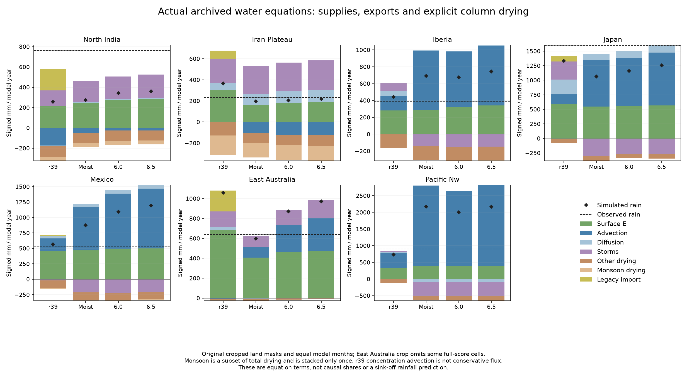
The original archived equation supplies and exports are shown on identical cropped cells. Monsoon drying is already part of total drying and is stacked only once. The r39 concentration-form advection is not a conservative moisture flux.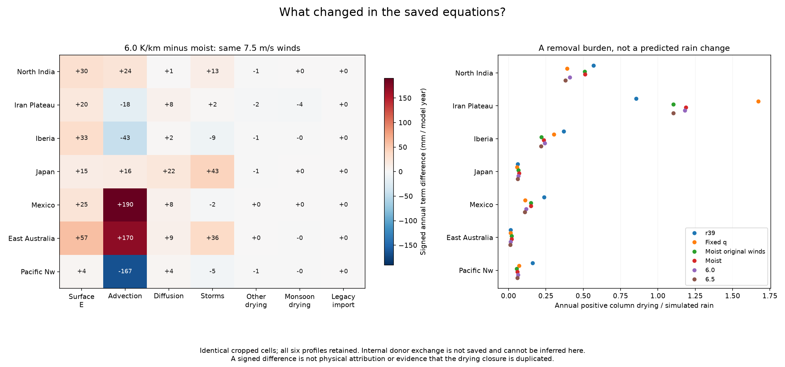
Changes are exact differences in archived equation terms, not causal shares or predicted rain after removing the sink. All six profiles remain in the download; the small missing East Australia crop fringe is explicitly counted.
Every saved monthly cell equation is checked before averaging. The complete results retain all six profiles, seven regions, lowland/upland bins and the original full-score rainfall measurements. Budget means use the original cropped diagnostic masks: East Australia has 347 cropped cells versus 358 in the full score. Its cropped budgets must not be read as the full-score means.
For the four profiles with saved column water, the removal coefficient is −drying / (month duration × water): a water-weighted monthly rate, not a mean prescribed parameter or instantaneous rate. Bin and annual rates use ratios of summed loss to water exposure. Zero loss with positive water has infinite reciprocal timescale; zero water gives an unavailable rate. The two older controls did not save water, so their rates remain unavailable.
Branch winds, donor vertical flux, layer rain and step water were not saved. Their overlap with the drying closure and the rain response to removing it cannot be inferred from monthly means. This is neither proof of double counting nor new climate validation. The first audit attempt reached serialization after its checks and figures but failed on a NumPy integer in geometry metadata; that zero-integration attempt remains preserved, and the corrected attempt uses a separate directory. Normal climate, economy, settlement and headline measurements remain unchanged.
Download all signed drying budgets, paired differences and water-weighted rates · Equation audit and limitations
Download environmental temperature and moisture capacity partition results · Method, results and limitations
Shared westerlies and climate calibration
Shared westerlies and climate calibration
Only the globally shared peak background westerly amplitude changes: fixed5.0/6.25/7.5m/s versus8.76m/s. The background poleward component and seasonal factor remain fixed; terrain, pressure flow, thermal shear, temperature and sea state respond through the coupled model. Corrected rain/recycling, independent no-mixing moisture, all other coefficients and planetary settings remain fixed. New native PNW wind and humidity constraints supplement every earlier guard. This is a bounded sensitivity bracket, not three measured column speeds or an optimum.
The independent steady water states share a stationary dry-air column with25% lower and75% upper mass. Actual spatial water fractions feed donor faces and diagnostic vapor winds. There is no independently solved vertical temperature, latent heating or atmospheric time storage.
The pilot attempts 42 integrations: 42 pass strict numerics and 0 fail. Original and historical physical controls must reproduce their archived fields before candidates. No profile passed all fixed safeguards. No adopted profile, headline score or atlas climate is replaced by this research page.
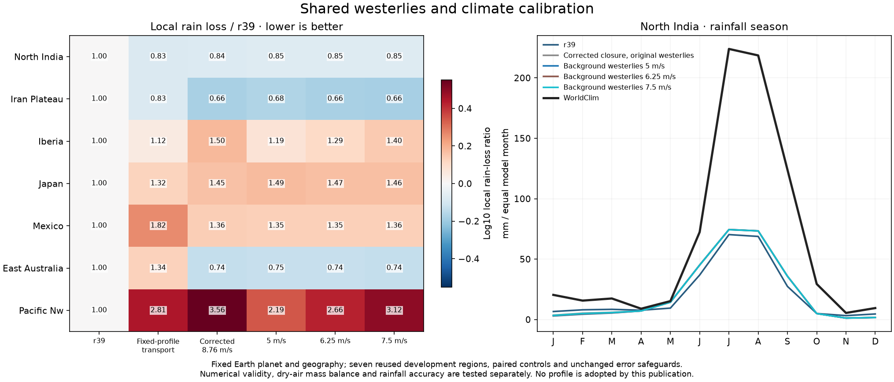
Every trial faces rain, temperature, regional, ocean, outside-wind, mass and separate-branch speed safeguards. Separate upwinding adds grid-dependent first-order mixing; it is not a measured physical diffusivity. Control details and all numerical certificates are in the download.
North India, identical scored cells| Profile | Annual rain mm | Monthly rain MAE mm | Wind RMSE m/s |
|---|
| r39 | 256 | 50.01 | 7.21 |
| Fixed-profile transport | 345 | 43.67 | 5.42 |
| Corrected closure, original westerlies | 272 | 44.65 | 5.39 |
| Background westerlies 5 m/s | 271 | 44.79 | 5.40 |
| Background westerlies 6.25 m/s | 271 | 44.75 | 5.40 |
| Background westerlies 7.5 m/s | 272 | 44.70 | 5.39 |
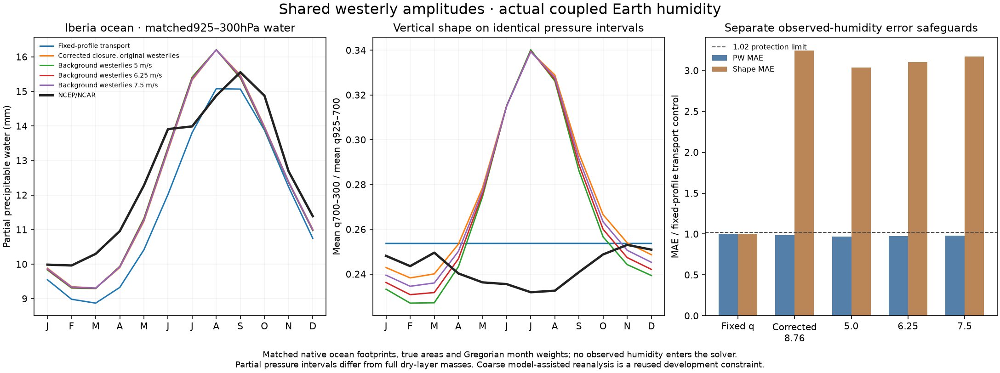
Matched pressure ranges exclude air below925hPa and above300hPa. Each observed-water and shape MAE must remain within2% of the common-mass fixed-profile control. A closer rainfall total cannot pay for worse humidity physics.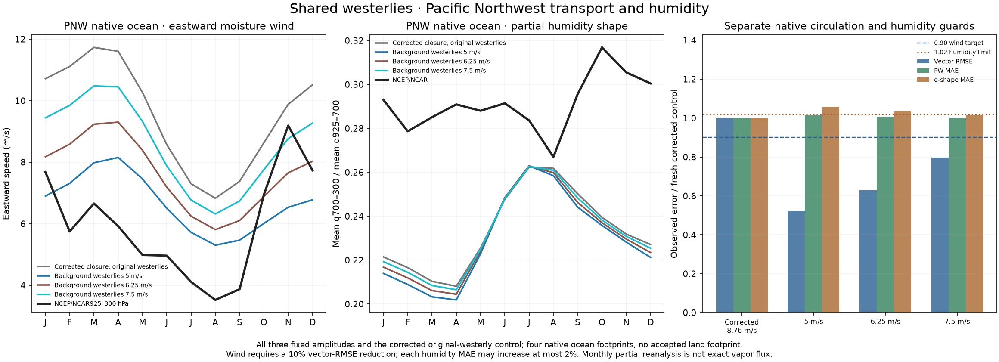
Every fixed amplitude is shown against the fresh corrected original-westerly control. Wind vector RMSE must fall to at most 90% of that control; partial water and vertical-shape MAEs each may reach at most 102%. These distinct limits use only four reused native ocean footprints. Missing or failed diagnostics are marked; full screening failures remain in the download. The native partial-column reference and modeled whole-column moisture wind differ in vertical coverage and omit transient moisture covariance.
The model retains approximate hydrostatic mass, flat projected geometry, a fixed lower mass fraction and independently solved humidity in two broad dry layers. Reanalysis constraints cover only a monthly925–300hPa partial column and omit transient moisture covariance. Reused development regions are not new independent validation.
Pacific Northwest: distinguish thermal capacity from actual humidity
Separate reference diagnostic; zero additional Earth integrations and no fitted profile. The same four PNW ocean footprints cover 191,166 km². Both predicted profiles start from observed 925 hPa temperature, with higher temperatures and all humidity withheld. The lapse remains the fixed r39 value; no humidity multiplier is fitted.
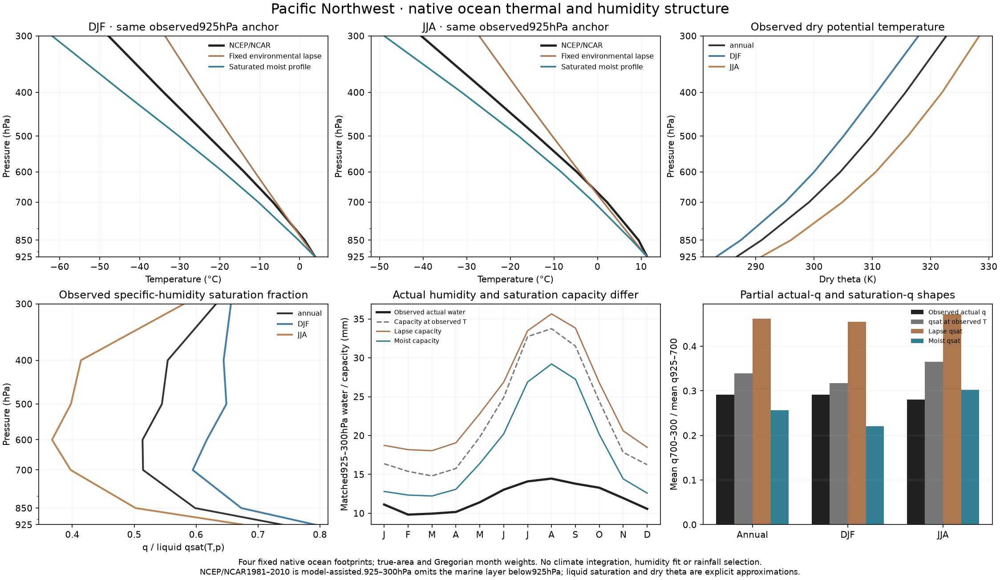
Actual water, saturation capacity and their vertical shapes are distinct. All quantities use the same seven pressure nodes, native physical areas and Gregorian month weights. Dry theta above 925 hPa does not diagnose a marine inversion below that level.
Observed partial water is 11.989 mm and the actual upper/lower q ratio is 0.291. Saturation at the observed temperature profile gives a different ratio, 0.339. The anchored lapse and moist capacities give 0.462 and 0.257; a capacity ratio closer to actual humidity does not establish a better thermal profile.
Annual native-area/day means; saturation is capacity, not predicted actual water| Temperature profile | Saturated 925–300 hPa capacity mm | Partial saturation q ratio | Withheld 850–300 hPa temperature MAE K |
|---|
| Observed temperature | 22.008 | 0.339 | — |
| Fixed environmental lapse | 24.423 | 0.462 | 4.365 |
| Saturated moist profile | 18.171 | 0.257 | 5.238 |
Actual lower/upper water-to-capacity fractions are 0.605/0.526, using saturation at observed temperatures. These fractions are calculated per footprint and month before averaging. Thermal capacity and actual humidity both shape the vertical contrast; the result does not justify imposing one universal q ratio or resetting solved moisture.
This tiny sample contains no accepted land footprint. Model-assisted NCEP/NCAR 1981–2010 monthly normals differ from the WorldClim 1970–2000 rainfall period. The 925–300 hPa window omits the near-surface marine layer and transient covariance. The observed anchor, liquid-only saturation, constant heat capacities, prescribed temperature floor and absence of cloud/latent-energy feedback remain explicit approximations. No rainfall attribution, global validation, fit selection or atlas-climate replacement follows.
Download all native, monthly and seasonal PNW thermal/humidity profiles · Equations, measured results and limitations
Download shared westerlies and climate calibration results · Method, results and limitations
Column convection and falling-rain evaporation
Column convection and falling-rain evaporation
The empirical convection law uses total column humidity once, while local dynamical rain and overflow retain layer humidities. Falling rain evaporates according to the actual lower air. Upper rain removes its gross water from the upper reservoir and routes the evaporated fraction into lower vapor; the internal transfer cancels exactly in the column ledger. Total proportional-profile ground rain remains compatible with the old law. All coefficients, winds, planetary settings, capacities and source/sink schemes stay fixed. The two trials retain the existing no/5-day mixing settings; no parcel model or vertical energy feedback is added.
The independent steady water states share a stationary dry-air column with25% lower and75% upper mass. Actual spatial water fractions feed donor faces and diagnostic vapor winds. There is no independently solved vertical temperature, latent heating or atmospheric time storage.
The pilot attempts 42 integrations: 42 pass strict numerics and 0 fail. Original and historical physical controls must reproduce their archived fields before candidates. No profile passed all fixed safeguards. No adopted profile, headline score or atlas climate is replaced by this research page.
Every trial faces rain, temperature, regional, ocean, outside-wind, mass and separate-branch speed safeguards. Separate upwinding adds grid-dependent first-order mixing; it is not a measured physical diffusivity. Control details and all numerical certificates are in the download.
North India, identical scored cells| Profile | Annual rain mm | Monthly rain MAE mm | Wind RMSE m/s |
|---|
| r39 | 256 | 50.01 | 7.21 |
| Fixed-profile transport | 345 | 43.67 | 5.42 |
| Previous independent water | 281 | 44.45 | 5.39 |
| Previous water, 5-day mixing | 316 | 43.54 | 5.38 |
| Column convection, no mixing | 272 | 44.65 | 5.39 |
| Column convection, 5-day mixing | 296 | 43.90 | 5.39 |
The model retains approximate hydrostatic mass, flat projected geometry, a fixed lower mass fraction and independently solved humidity in two broad dry layers. Reanalysis constraints cover only a monthly925–300hPa partial column and omit transient moisture covariance. Reused development regions are not new independent validation.
Pacific Northwest: check the incoming circulation
Separate diagnostic, three actual climate reruns; no tuning or adoption. Every run reproduces the parent rainfall cells and temperature scores; r39 also reproduces archived monthly temperature/rain cells. New NCEP/NCAR pressure-level data use the same verified units, true-area native aggregation, projected-vector conversion, calendar weights and terrain/coast exclusions as the earlier circulation audits. Coverage retains 4 ocean and 0 land native footprints.
The reference is a q-weighted925–300hPa partial column; modeled vectors are whole-column moisture diagnostics. This approximation and monthly-mean reference omit vertical detail and transient moisture covariance. Arrows share a speed scale.
Identical PNW climates; matched native ocean diagnostics| Profile | Annual land rain mm | Ocean vector RMSE m/s | Partial upper/lower q |
|---|
| r39 | 732 | 4.19 | — |
| Previous independent water | 2543 | 4.12 | 0.234 |
| Corrected convection/recycling | 2394 | 4.13 | 0.234 |
Download Pacific Northwest circulation and humidity audit · Sources, measurements and limitations
Download column convection and falling-rain evaporation results · Method, results and limitations
Independent lower and upper water
Independent lower and upper atmospheric water
Lower and upper water are solved independently in the coupled seasonal model, with donor vertical exchange, lower-only ocean/land evaporation, layer rain, drying and conservative storms. Both actual layer equations and their sum must pass strict residual checks. Calibrated total capacity stays fixed; a normalized moist hydrostatic profile only partitions capacity and boundary supply, without resetting actual humidity. The old fixed humidity ratio is inactive. The two declared closures add no extra mixing or symmetric5day mixing.
The independent steady water states share a stationary dry-air column with25% lower and75% upper mass. Actual spatial water fractions feed donor faces and diagnostic vapor winds. There is no independently solved vertical temperature, latent heating or atmospheric time storage.
The pilot attempts 35 integrations: 35 pass strict numerics and 0 fail. Original and historical physical controls must reproduce their archived fields before candidates. No profile passed all fixed safeguards. No adopted profile, headline score or atlas climate is replaced by this research page.
Every trial faces rain, temperature, regional, ocean, outside-wind, mass and separate-branch speed safeguards. Separate upwinding adds grid-dependent first-order mixing; it is not a measured physical diffusivity. Control details and all numerical certificates are in the download.
North India, identical scored cells| Profile | Annual rain mm | Monthly rain MAE mm | Wind RMSE m/s |
|---|
| r39 | 256 | 50.01 | 7.21 |
| Common-mass transport control | 345 | 43.67 | 5.42 |
| pressure control | 230 | 55.62 | 5.39 |
| Independent water, no vertical mixing | 281 | 44.45 | 5.39 |
| Independent water,5day mixing | 316 | 43.54 | 5.38 |
The model retains approximate hydrostatic mass, flat projected geometry, a fixed lower mass fraction and independently solved humidity in two broad dry layers. Reanalysis constraints cover only a monthly925–300hPa partial column and omit transient moisture covariance. Reused development regions are not new independent validation.
Next physical step: cooling and condensation during ascent
Isolated thermodynamic proof; zero additional Earth integrations. Eighteen declared temperature, humidity and endpoint-pressure combinations each pass at three numerical resolutions. A parcel cools dry until its root-located lifting condensation level, then follows a liquid pseudoadiabatic path. Vapor plus immediate condensate is conserved per kilogram of dry air; pressure work, temperature change and latent heat satisfy the same approximate first law.
For the fixed300K,60% RH parcel, ascent to750/500/300hPa condenses22%/66%/95% of its initial vapor. Endpoint pressure matters: no detrainment level is selected by rainfall outcomes. All18cases remain in the download.
The largest first-law residual is0.000042J/kg dry air; the water residual is below4×10⁻¹⁸kg/kg dry air. This verifies the declared approximation, not atmospheric energy closure. Constant dry heat capacity and latent heat, no entrainment or environmental heating, and liquid saturation at cold temperatures remain limitations. These parcels do not yet alter the seasonal model, rainfall scores or normal atlas climates.
Download all parcel endpoints and numerical checks · Equations, all outcomes and coupling limits
Download independent lower and upper atmospheric water results · Method, results and limitations
Hydrostatic saturation and rainfall
Hydrostatic saturation and rainfall
The coupled model replaces the fixed vapor scale with hydrostatic specific-saturation integration. Two thermal profiles (existing environmental lapse or saturated moist adiabat) each use three fixed effective ocean column humidities0.45/0.60/original0.754746. Same pressure profile sets rain, sea-equilibrium and storm-crest capacities. Full terrain lapse, prescribed200K upper thermal boundary and water top100hPa are explicit approximations. The existing fixed transport humidity ratio remains; no independent vertical temperature or latent heating is added. All six combinations were declared before outcomes; no planetary forcing or accuracy threshold changes.
Moist lower inflow and a drier upper return are transported as separate conservative directional branches. Their combined dry-air flux retains the stationary column constraint. Total water still shares a fixed vertical humidity profile; vertical humidity and thermodynamics are not independently prognostic. Surface heat, evaporation and terrain lift retain surface winds. Earth planetary settings stay fixed.
The pilot attempts 56 integrations: 56 pass strict numerics and 0 fail. Original and historical physical controls must reproduce their archived fields before candidates. No profile passed all fixed safeguards. No adopted profile, headline score or atlas climate is replaced by this research page.
Every trial faces rain, temperature, regional, ocean, outside-wind, mass and separate-branch speed safeguards. Separate upwinding adds grid-dependent first-order mixing; it is not a measured physical diffusivity. Control details and all numerical certificates are in the download.
North India, identical scored cells| Profile | Annual rain mm | Monthly rain MAE mm | Wind RMSE m/s |
|---|
| r39 | 256 | 50.01 | 7.21 |
| Common-mass transport control | 345 | 43.67 | 5.42 |
| Lapse profile, column RH 0.450 | 237 | 51.92 | 5.38 |
| Lapse profile, column RH 0.600 | 372 | 49.42 | 5.39 |
| Lapse profile, column RH 0.755 | 494 | 48.53 | 5.40 |
| Moist profile, column RH 0.450 | 230 | 55.62 | 5.39 |
| Moist profile, column RH 0.600 | 362 | 53.49 | 5.41 |
| Moist profile, column RH 0.755 | 495 | 52.06 | 5.41 |
The model retains approximate hydrostatic mass, flat projected geometry, a fixed lower mass fraction and an imposed vertical humidity shape. Reanalysis constraints cover only a monthly925–300hPa partial column and omit transient moisture covariance. Reused development regions are not new independent validation.
Download hydrostatic saturation and rainfall results · Method, results and limitations
Earth vertical temperature and moisture
Earth vertical temperature and moisture
Cached reference diagnostic; no climate integration or new rainfall accuracy score. Both hydrostatic profiles start from observed925hPa temperature, withholding higher temperatures and humidity. They are compared on the same native925–300hPa nodes and ocean footprints as the preceding circulation audit:3 California cells and20 Iberian cells.
The moist profile gives a closer humidity shape than extending the fitted surface lapse through the atmosphere. Shown column RH0.60 is the fixed middle value in the declared design; all six profile/humidity combinations remain in the download.
Observed upper/lower partial-column q ratios are0.300/0.243, compared with lapse capacity0.475/0.474 and moist capacity0.324/0.320 (California/Iberia). These925–700 and700–300hPa layers do not equal the model's full-column dry-mass split. Lower declared column humidity improves these partial water comparisons, but no new values are fitted or added to the running Earth plan.
Saturation capacity is not actual water. The prescribed200K upper thermal boundary, omitted water above100hPa, liquid approximation and lack of inversions remain physical limitations; cold capacity ratios can be high while total water is tiny.
NCEP1981–2010 is model-assisted and differs from the WorldClim rainfall period. These small ocean samples and observed-temperature anchors do not validate land rainfall, surface RH, full-column dynamics or fantasy geography. Existing atlas climates and headline scores remain unchanged.
Download native thermal and humidity comparisons · Reference footprints, all measurements and limitations · Coupled Earth comparison protocol
Nonlinear rain with separate reservoirs
Nonlinear rain with separate moisture reservoirs
Synthetic mechanism test, not an Earth accuracy gain. This follow-up uses the unchanged r39 nonlinear rainfall law, including its convective and subcloud terms, with identical prescribed winds, surface supply and both layer boundaries. Separate lower and upper water fields reduce a sharp convergence peak, both without vertical mixing and with5-day mixing.
 All three predeclared systems pass their actual nonlinear equations; each independent reservoir is checked separately. Rain is removed in proportion to current layer water. The near-uniform vertical humidity is a remaining physical limitation, not a validated Earth result.
All three predeclared systems pass their actual nonlinear equations; each independent reservoir is checked separately. Rain is removed in proportion to current layer water. The near-uniform vertical humidity is a remaining physical limitation, not a validated Earth result.
The imposed-ratio peak is46.2mm/day; separate fields give about1.1mm/day in this manufactured case. Upper/lower specific-humidity ratios reach0.97, so vertical saturation and cloud formation still require explicit treatment. There is no seasonal thermal feedback, ocean exchange, storm transport or new climate calibration. Published atlas climates and headline scores remain unchanged.
Download nonlinear reservoir diagnostics · Equations, controls and physical limitations
Condensation within each layer
A further fixed experiment assigns0.625/0.375 of the same column saturation capacity to the lower/upper layers. Actual water remains independently solved. Each layer uses the old rain law at its equivalent column amount; this exactly recovers the original law when the old humidity shape is imposed, including the convective numerical water floor.
 Shown: fixed5-day mixing comparisons, with both zero/5-day outcomes retained in the download. Layer rain reduces upper humidity somewhat, but ratios still reach0.91. The imposed capacity split is an approximation, not independent layer temperatures or an observed Earth result.
Shown: fixed5-day mixing comparisons, with both zero/5-day outcomes retained in the download. Layer rain reduces upper humidity somewhat, but ratios still reach0.91. The imposed capacity split is an approximation, not independent layer temperatures or an observed Earth result.
Both new systems pass strict per-layer nonlinear residuals. Six new closure/analytic/equilibrium checks bring the focused reservoir suite to21 passing tests. Neither this example nor the preceding proportional-column example supplies a new Earth accuracy score or changes the normal atlas climate.
Download layer-condensation results and verified parent controls · Capacity partition, tests and remaining limitations
Two-reservoir transport prototype
Two-reservoir transport prototype
Manufactured operator example, not a climate calibration or observed accuracy gain. Lower and upper water amounts are independent unknowns. Diagnosed vertical air exchange carries the donor layer's humidity and closes each layer's dry-air continuity. A rising moist flow can moisten the upper return rather than keeping its humidity artificially fixed.
 Same synthetic winds, surface supply, linear removal coefficients and both layer boundary values. Zero vertical mixing is shown separately. Illustrative linear sinks are not cloud physics; no observed climate is scored.
Same synthetic winds, surface supply, linear removal coefficients and both layer boundary values. Zero vertical mixing is shown separately. Illustrative linear sinks are not cloud physics; no observed climate is scored.
Nine independent equilibrium, matrix/face, analytic convergence and conservation checks pass. The water ledger closes to about3e-14mm/day in this example. The prototype is not coupled to the seasonal climate, and supplies no independent temperatures, saturation, cloud microphysics, storms or momentum. Published Earth/world climate and population maps remain unchanged.
Download manufactured reservoir diagnostics · Equations, verification and coupling requirements
Storm paths and local condensation
Storm paths and local condensation
Shared winds and corrected common-mass transport stay fixed. Six shorter conservative storm hops first run without any actual condensation, then with fixed crest coefficients0.5/0.75. Vapor above local capacity condenses where it forms; only surviving vapor takes later hops. The download retains actual condensation certificates so changing transport geometry is distinguished from rainout. This is an unresolved storm closure, not a resolved cloud trajectory.
Moist lower inflow and a drier upper return are transported as separate conservative directional branches. Their combined dry-air flux retains the stationary column constraint. Total water still shares a fixed vertical humidity profile; vertical humidity and thermodynamics are not independently prognostic. Surface heat, evaporation and terrain lift retain surface winds. Earth planetary settings stay fixed.
The pilot attempts 35 integrations: 35 pass strict numerics and 0 fail. Original and historical physical controls must reproduce their archived fields before candidates. No profile passed all fixed safeguards. No adopted profile, headline score or atlas climate is replaced by this research page.
 Every trial faces rain, temperature, regional, ocean, outside-wind, mass and separate-branch speed safeguards. Separate upwinding adds grid-dependent first-order mixing; it is not a measured physical diffusivity. Control details and all numerical certificates are in the download.
Every trial faces rain, temperature, regional, ocean, outside-wind, mass and separate-branch speed safeguards. Separate upwinding adds grid-dependent first-order mixing; it is not a measured physical diffusivity. Control details and all numerical certificates are in the download.
North India, identical scored cells| Profile | Annual rain mm | Monthly rain MAE mm | Wind RMSE m/s |
|---|
| r39 | 256 | 50.01 | 7.21 |
| Common-mass transport control | 345 | 43.67 | 5.42 |
| Short hops, no condensation | 335 | 42.12 | 5.41 |
| Crest coefficient = 0.5 | 335 | 42.12 | 5.41 |
| Crest coefficient = 0.75 | 336 | 42.18 | 5.41 |
 These fixed examples expose spatial tradeoffs. All ratios and failures remain in the results; closer annual totals can still hide worse local rain.
These fixed examples expose spatial tradeoffs. All ratios and failures remain in the results; closer annual totals can still hide worse local rain.
The model retains approximate hydrostatic mass, flat projected geometry, a fixed lower mass fraction and an imposed vertical humidity shape. Reanalysis constraints cover only a monthly925–300hPa partial column and omit transient moisture covariance. Reused development regions are not new independent validation.
Download storm paths and local condensation results · Method, results and limitations
Shared wind calibration on conservative transport
Shared wind calibration on conservative transport
Eight fixed Sobol samples vary land/ocean friction, trade/westerly speed and large/local thermal-pressure amplitudes. Common-mass water transport, vertical humidity ratio0.2,1km thermal shear, rainfall closure and Earth planetary forcing remain fixed. The download records all six parameter values for every trial; eight samples do not establish an optimum.
Moist lower inflow and a drier upper return are transported as separate conservative directional branches. Their combined dry-air flux retains the stationary column constraint. Total water still shares a fixed vertical humidity profile; vertical humidity and thermodynamics are not independently prognostic. Surface heat, evaporation and terrain lift retain surface winds. Earth planetary settings stay fixed.
The pilot attempts 70 integrations: 70 pass strict numerics and 0 fail. Original and historical physical controls must reproduce their archived fields before candidates. No profile passed all fixed safeguards. No adopted profile, headline score or atlas climate is replaced by this research page.
 Every trial faces rain, temperature, regional, ocean, outside-wind, mass and separate-branch speed safeguards. Separate upwinding adds grid-dependent first-order mixing; it is not a measured physical diffusivity. Control details and all numerical certificates are in the download.
Every trial faces rain, temperature, regional, ocean, outside-wind, mass and separate-branch speed safeguards. Separate upwinding adds grid-dependent first-order mixing; it is not a measured physical diffusivity. Control details and all numerical certificates are in the download.
North India, identical scored cells| Profile | Annual rain mm | Monthly rain MAE mm | Wind RMSE m/s |
|---|
| r39 | 256 | 50.01 | 7.21 |
| Common-mass transport control | 345 | 43.67 | 5.42 |
| Wind trial 1 | 352 | 43.78 | 5.13 |
| Wind trial 2 | 410 | 43.44 | 4.89 |
| Wind trial 3 | 412 | 43.93 | 5.30 |
| Wind trial 4 | 327 | 44.07 | 4.69 |
| Wind trial 5 | 284 | 45.70 | 5.19 |
| Wind trial 6 | 398 | 42.90 | 5.18 |
| Wind trial 7 | 496 | 45.24 | 4.71 |
| Wind trial 8 | 251 | 45.87 | 5.61 |
 These fixed examples expose spatial tradeoffs. All ratios and failures remain in the results; closer annual totals can still hide worse local rain.
These fixed examples expose spatial tradeoffs. All ratios and failures remain in the results; closer annual totals can still hide worse local rain.
 Excess coastal rain in the corrected two-branch control is supported mainly by mean-flow import; storm mixing exports water there. The signed terms are actual equation diagnostics, not causal shares of a nonlinear change. Legacy r39 concentration advection does not conserve vapor. All profiles and seven regional budgets are retained in the download.
Excess coastal rain in the corrected two-branch control is supported mainly by mean-flow import; storm mixing exports water there. The signed terms are actual equation diagnostics, not causal shares of a nonlinear change. Legacy r39 concentration advection does not conserve vapor. All profiles and seven regional budgets are retained in the download.
The model retains approximate hydrostatic mass, flat projected geometry, a fixed lower mass fraction and an imposed vertical humidity shape. Reanalysis constraints cover only a monthly925–300hPa partial column and omit transient moisture covariance. Reused development regions are not new independent validation.
Download shared wind calibration on conservative transport results · Method, results and limitations
Rain activation and moisture delivery
Rain activation and moisture delivery
Transport is held at the middle humidity ratio0.2. Only the rain-activation threshold changes to fixed0.5/0.6/0.7, testing whether delayed rainout improves delivery. This bounded plan was declared before its parent experiment finished; no extra humidity ratios or regional multipliers are added.
Moist lower inflow and a drier upper return are transported as separate conservative directional branches. Their combined dry-air flux retains the stationary column constraint. Total water still shares a fixed vertical humidity profile; vertical humidity and thermodynamics are not independently prognostic. Surface heat, evaporation and terrain lift retain surface winds. Earth planetary settings stay fixed.
The pilot attempts 35 integrations: 35 pass strict numerics and 0 fail. Original and historical physical controls must reproduce their archived fields before candidates. No profile passed all fixed safeguards. No adopted profile, headline score or atlas climate is replaced by this research page.
 Every trial faces rain, temperature, regional, ocean, outside-wind, mass and separate-branch speed safeguards. Separate upwinding adds grid-dependent first-order mixing; it is not a measured physical diffusivity. Control details and all numerical certificates are in the download.
Every trial faces rain, temperature, regional, ocean, outside-wind, mass and separate-branch speed safeguards. Separate upwinding adds grid-dependent first-order mixing; it is not a measured physical diffusivity. Control details and all numerical certificates are in the download.
North India, identical scored cells| Profile | Annual rain mm | Monthly rain MAE mm | Wind RMSE m/s |
|---|
| r39 | 256 | 50.01 | 7.21 |
| transport control | 345 | 43.67 | 5.42 |
| Rain threshold RH = 0.5 | 328 | 45.41 | 5.43 |
| Rain threshold RH = 0.6 | 300 | 47.84 | 5.44 |
| Rain threshold RH = 0.7 | 273 | 49.76 | 5.44 |
 These fixed examples expose spatial tradeoffs. All ratios and failures remain in the results; closer annual totals can still hide worse local rain.
These fixed examples expose spatial tradeoffs. All ratios and failures remain in the results; closer annual totals can still hide worse local rain.
The model retains approximate hydrostatic mass, flat projected geometry, a fixed lower mass fraction and an imposed vertical humidity shape. Reanalysis constraints cover only a monthly925–300hPa partial column and omit transient moisture covariance. Reused development regions are not new independent validation.
Download rain activation and moisture delivery results · Method, results and limitations
Air-mass-aware water transport
Air-mass-aware water transport
This follow-up uses the same air mass for donor W/M advection, mixing-ratio diffusion and storm exchange. The disabled path reproduces the preceding two-layer control exactly.
Moist lower inflow and a drier upper return are transported as separate conservative directional branches. Their combined dry-air flux retains the stationary column constraint. Total water still shares a fixed vertical humidity profile; vertical humidity and thermodynamics are not independently prognostic. Surface heat, evaporation and terrain lift retain surface winds. Earth planetary settings stay fixed.
The pilot attempts 49 integrations: 49 pass strict numerics and 0 fail. Original and historical physical controls must reproduce their archived fields before candidates. No profile passed all fixed safeguards. No adopted profile, headline score or atlas climate is replaced by this research page.
 Every trial faces rain, temperature, regional, ocean, outside-wind, mass and separate-branch speed safeguards. Separate upwinding adds grid-dependent first-order mixing; it is not a measured physical diffusivity. Control details and all numerical certificates are in the download.
Every trial faces rain, temperature, regional, ocean, outside-wind, mass and separate-branch speed safeguards. Separate upwinding adds grid-dependent first-order mixing; it is not a measured physical diffusivity. Control details and all numerical certificates are in the download.
North India, identical scored cells| Profile | Annual rain mm | Monthly rain MAE mm | Wind RMSE m/s |
|---|
| r39 | 256 | 50.01 | 7.21 |
| r39 numerical control | 256 | 50.01 | 7.21 |
| Balanced single layer | 81 | 59.89 | 7.13 |
| Original two-layer control | 329 | 46.20 | 5.39 |
| Upper/lower q = 0.1 | 446 | 44.85 | 5.41 |
| Upper/lower q = 0.2 | 345 | 43.67 | 5.42 |
| Upper/lower q = 0.3 | 277 | 44.94 | 5.42 |
 These fixed examples expose spatial tradeoffs. All ratios and failures remain in the results; closer annual totals can still hide worse local rain.
These fixed examples expose spatial tradeoffs. All ratios and failures remain in the results; closer annual totals can still hide worse local rain.
 The common air mass corrects a terrain tracer-consistency defect. Numerical equilibrium is separate from climate accuracy.
The common air mass corrects a terrain tracer-consistency defect. Numerical equilibrium is separate from climate accuracy.
The model retains approximate hydrostatic mass, flat projected geometry, a fixed lower mass fraction and an imposed vertical humidity shape. Reanalysis constraints cover only a monthly925–300hPa partial column and omit transient moisture covariance. Reused development regions are not new independent validation.
Download air-mass-aware water transport results · Method, results and limitations
Moist inflow and upper return
Moist inflow and upper return flow
Moist lower inflow and a drier upper return are transported as separate conservative directional branches. Their combined dry-air flux retains the stationary column constraint. Total water still shares a fixed vertical humidity profile; vertical humidity and thermodynamics are not independently prognostic. Surface heat, evaporation and terrain lift retain surface winds. Earth planetary settings stay fixed.
The pilot attempts 49 integrations: 49 pass strict numerics and 0 fail. Original and historical physical controls must reproduce their archived fields before candidates. No profile passed all fixed safeguards. No adopted profile, headline score or atlas climate is replaced by this research page.
 Every trial faces rain, temperature, regional, ocean, outside-wind, mass and separate-branch speed safeguards. Separate upwinding adds grid-dependent first-order mixing; it is not a measured physical diffusivity. Control details and all numerical certificates are in the download.
Every trial faces rain, temperature, regional, ocean, outside-wind, mass and separate-branch speed safeguards. Separate upwinding adds grid-dependent first-order mixing; it is not a measured physical diffusivity. Control details and all numerical certificates are in the download.
North India, identical scored cells| Profile | Annual rain mm | Monthly rain MAE mm | Wind RMSE m/s |
|---|
| r39 | 256 | 50.01 | 7.21 |
| r39 numerical control | 256 | 50.01 | 7.21 |
| Balanced single layer | 81 | 59.89 | 7.13 |
| Balanced +1 km control | 60 | 59.86 | 5.47 |
| Upper/lower q = 0.1 | 423 | 46.97 | 5.39 |
| Upper/lower q = 0.2 | 329 | 46.20 | 5.39 |
| Upper/lower q = 0.3 | 265 | 47.58 | 5.40 |
 These fixed examples expose spatial tradeoffs. All ratios and failures remain in the results; closer annual totals can still hide worse local rain.
These fixed examples expose spatial tradeoffs. All ratios and failures remain in the results; closer annual totals can still hide worse local rain.
The model retains approximate hydrostatic mass, flat projected geometry, a fixed lower mass fraction and an imposed vertical humidity shape. Reanalysis constraints cover only a monthly925–300hPa partial column and omit transient moisture covariance. Reused development regions are not new independent validation.
Download moist inflow and upper return flow results · Method, results and limitations
Column mass, wind and rainfall
Mass-consistent column flow
A divergent surface-like wind can accumulate air when applied to a whole stationary column. This experiment makes the minimum mass-weighted velocity correction needed to cancel dry-column face-flux divergence. It keeps Earth’s planetary settings fixed and adds no observed-wind forcing. Surface heat, evaporation and terrain lift retain the surface wind.
The fixed pilot attempts 49 integrations: 49 pass strict numerics and 0 fail. Seven adopted climate controls and three native wind controls reproduce exactly. Another21 physical/numerical controls reproduce every archived array field. No candidate passed the fixed screening safeguards. No fit or atlas climate is adopted by this page.
 Lower ratios improve on r39; the full selection also protects temperature, individual regions, ocean climate and solver/budget validity. Numerical success and mass consistency are separate from climate accuracy.
Lower ratios improve on r39; the full selection also protects temperature, individual regions, ocean climate and solver/budget validity. Numerical success and mass consistency are separate from climate accuracy.
North India, identical scored cells| Profile | Annual rain mm | Monthly rain MAE mm | Wind vector RMSE m/s |
|---|
| Adopted r39 | 256 | 50.01 | 7.21 |
| r39 numerical control | 256 | 50.01 | 7.21 |
| Conservative flux | 482 | 48.79 | 7.10 |
| Thermal control, 1 km | 579 | 52.82 | 5.40 |
| Mass-balanced flux | 81 | 59.89 | 7.13 |
| Balanced +1 km | 60 | 59.86 | 5.47 |
| Balanced +2 km | 57 | 59.03 | 4.36 |
 This reference-only exploratory check exposes the closure’s strongest assumption: a mass-consistent dry-air wind need not carry moisture in the right direction. Both targets span only925–300hPa, use monthly means and omit transient moisture covariance. No new target or validation sample is used to select a candidate.
This reference-only exploratory check exposes the closure’s strongest assumption: a mass-consistent dry-air wind need not carry moisture in the right direction. Both targets span only925–300hPa, use monthly means and omit transient moisture covariance. No new target or validation sample is used to select a candidate.
 These two fixed examples show rain placement in the monsoon interior and a wet mountain coast. All candidates and failures remain in the results; maps do not replace monthly cell errors.
These two fixed examples show rain placement in the monsoon interior and a wet mountain coast. All candidates and failures remain in the results; maps do not replace monthly cell errors.
This is a stationary equivalent-barotropic kinematic closure with approximate hydrostatic column mass and adjustable open-border winds. It does not solve momentum, surface-pressure storage, vertical return circulation or the vertical humidity profile. Flat-grid geometry and reference-period limitations remain. The historical global/city climate scores are unchanged.
Download column mass, rainfall and wind diagnostics · Column mass method and results
Thermal wind, rainfall and circulation
Thermal-wind shear: an effective layer remains insufficient
The outside wind comparison motivated a new physical experiment. Horizontal modeled temperature gradients generate hydrostatic/geostrophic shear up to fixed effective heights of1,2 and3km. Earth’s orbit, radiation, rotation and geography stay fixed. No observed wind enters the model. The mechanism is opt-in, with the legacy default unchanged.
The fixed six-profile pilot attempts42 integrations;42 pass strict numerics and0 fail. Seven original climate controls and three native wind controls reproduce exactly. Separate damped controls keep numerical sensitivity distinct from physical changes. No physical candidate qualifies. The selection still requires rainfall, temperature, regional, ocean and outside-wind safeguards; no full31 or fine stage runs.
 Wind errors compare a fixed humidity-weighted925–300hPa reference; this partial column excludes transient moisture covariance. Rain loss preserves local annual and monthly errors; a closer regional annual total can still have worse local monthly rain. White FAILED cells, if present, remain failed rather than entering partial means.
Wind errors compare a fixed humidity-weighted925–300hPa reference; this partial column excludes transient moisture covariance. Rain loss preserves local annual and monthly errors; a closer regional annual total can still have worse local monthly rain. White FAILED cells, if present, remain failed rather than entering partial means.
 Changed transport direction alone is insufficient evidence of a better climate. The approximation still has one effective moist layer, fixed synoptic smoothing and an equatorial taper; it does not resolve vertical return flow or an atmospheric momentum/energy budget.
Changed transport direction alone is insufficient evidence of a better climate. The approximation still has one effective moist layer, fixed synoptic smoothing and an equatorial taper; it does not resolve vertical return flow or an atmospheric momentum/energy budget.
 At3km, the regional annual total reaches754mm versus761mm observed, while local monthly MAE rises from50.0mm for r39 to59.3mm. The map shows why a correct average does not establish accurate local climate.
At3km, the regional annual total reaches754mm versus761mm observed, while local monthly MAE rises from50.0mm for r39 to59.3mm. The map shows why a correct average does not establish accurate local climate.
Download thermal-wind results and safeguards · Thermal-wind method and results
Circulation against reanalysis
Checking the winds against reanalysis
Four unchanged r39 integrations reproduce archived climate fields exactly and pass strict numerics. Their modeled wind vectors are compared with NCEP/NCAR1981–2010 pressure-level monthly means. This is an outside circulation diagnosis; it changes no climate fit or rainfall score.
Over North India’s11 retained lowland cells, the humidity-weighted925–300hPa vector RMSE is7.21m/s and direction cosine−0.54. Eastern Australia’s7 lowland cells give6.27m/s and−0.14. Iberia’s20 ocean cells show an overly strong mean-vector magnitude:7.77m/s modeled versus4.21m/s in that partial column. Different pressure targets give different answers; the model’s single surface-like layer cannot represent the full wind profile.
 Monthly mean vector components expose direction, season and height differences. Actual month overlap and full projection geometry are included. A speed-only comparison would miss reversed flow.
Monthly mean vector components expose direction, season and height differences. Actual month overlap and full projection geometry are included. A speed-only comparison would miss reversed flow.
 Conservative exclusions leave11/7 lowland cells in India/Australia and no California land sample; California has only3 retained ocean cells. Fine model cells are aggregated into native2.5° footprints rather than counted as independent references.
Conservative exclusions leave11/7 lowland cells in India/Australia and no California land sample; California has only3 retained ocean cells. Fine model cells are aggregated into native2.5° footprints rather than counted as independent references.
Reanalysis is model-assisted, not direct point observations. The humidity-weighted partial column omits air below925hPa/above300hPa and transient q′u′ covariance. Terrain masking uses model geography; native below-ground flags are unavailable. The reference period differs from WorldClim1970–2000 rainfall. These reused regions do not establish global circulation or rainfall skill.
Download circulation vectors and diagnostics · Circulation method and scope
Observation-calendar alignment
Observation-calendar alignment
The historical Earth benchmark compares twelve equal model months with WorldClim's calendar-month observations. A separate audit now aggregates the actual unchanged r39 time series into declared 365-day Gregorian periods, including circular month boundaries for a mirrored southern region.
All four reused-region simulations pass numerical checks and reproduce the archived equal-month controls exactly. Calendar-aligned rainfall MAE is lower by only 0.02–0.12 mm/month, while temperature MAE rises 0.009–0.032°C. Annual simulated rain is unchanged to rounding precision. The mismatch exists, but it does not explain the large monsoon or coastal errors.
 The two methods score the same physical climate. Their differences are evaluation changes, not a new calibrated fit. This four-region audit does not remeasure the 31-region or 3,667-city headline statistics.
The two methods score the same physical climate. Their differences are evaluation changes, not a new calibrated fit. This four-region audit does not remeasure the 31-region or 3,667-city headline statistics.
 A known-answer example explains the duration mismatch. The audit uses a non-leap 365-day calendar and the existing half-year southern mirror; leap-year and forcing-interpolation approximations remain. Model physics, defaults, historical scores and all atlas climate fields stay unchanged.
A known-answer example explains the duration mismatch. The audit uses a non-leap 365-day calendar and the existing half-year southern mirror; leap-year and forcing-interpolation approximations remain. Model physics, defaults, historical scores and all atlas climate fields stay unchanged.
Download both calendar definitions and paired scores · Calendar method and scope
Conservative flux and column wind
Stable conservative replay and column winds
The next fixed experiment separates numerical stability from physical accuracy. A lower-damping replay uses up to 1,024 moisture iterations at the same 1% residual tolerance. It converges in every region, including Japan and Mexico, whose original failures remain preserved. All 42 runs pass, and seven original controls reproduce exactly.
A damped r39 control changes mapped-cell monthly rainfall by at most 0.0091 mm, so the large conservative-transport changes are not explained by this numerical drift. Three physically distinct trials then reduce and turn the column-pressure wind while keeping conservative mean and storm transport.
No physical trial qualifies. Lower column drag reduces Indian rain again while leaving severe coastal wet biases. The pure conservative replay still gives 482 mm/year in North India, 1,057 in Iberia, and 3,966 in Pacific NW. All residual, budget, regional and ocean protections remain in force; no full31 or finer stage runs.
 Ratios compare annual regional means and do not measure local spatial accuracy. The full selection uses monthly cell errors and regional protections. Stable numerics and conservative accounting are separate from accurate circulation and rainfall.
Ratios compare annual regional means and do not measure local spatial accuracy. The full selection uses monthly cell errors and regional protections. Stable numerics and conservative accounting are separate from accurate circulation and rainfall.
The surface-derived winds remain a likely structural limitation for a full-column flux equation: turning their pressure component alone is insufficient. This experiment does not establish the correct vertical wind or mass-return circulation. Qualified Earth physics stays r39; the published Earth atlas retains r38.
Download numerical drift and column-wind measurements · Complete follow-up record
Conservative vapor transport
Conservative vapor transport: a structural test
An opt-in shared-face flux equation now accounts for both incoming and outgoing vapor. It disables the old separate positive convergence import. Heat keeps its existing solver; moisture has a separate checked solver and a regional ledger that includes boundary reservoirs, evaporation, vertical drying, storms and rain.
Five comparisons isolate import removal, storm conservation and the advection change. Of 35 attempts, 31 pass and four nonlinear solves fail. All seven unchanged controls reproduce exactly. With conservative mean and storm transport, North India rises from 256 to 482 mm/year, toward 761 mm observed.
The climate candidate is rejected. Iberia, eastern Australia and Pacific NW become much too wet; Japan and Mexico fail the solve. No failed run enters an aggregate score or advances to later gates. A closed transport ledger is useful, but it does not establish accurate rainfall or a closed planetary water cycle.
 Horizontal flux cancellation is near machine precision in successful conservative runs. This is a steady regional vapor equation with open borders and modeled vertical losses, not a transient atmosphere or a closed planet. Default physics and atlas climate data remain unchanged.
Horizontal flux cancellation is near machine precision in successful conservative runs. This is a steady regional vapor equation with open borders and modeled vertical losses, not a transient atmosphere or a closed planet. Default physics and atlas climate data remain unchanged.
Download vapor-flux results and failed-solve records · Transport method and experiment
Land, ocean and pressure balance
Land, ocean and pressure balance
The next fixed experiment separated land and ocean drag, then tested nominal drags with 10% and 20% stronger thermal-pressure amplitudes. All 155 integrations passed numerical checks, with 31 fresh reference error/geography controls. No planetary property changed.
The 10% pressure candidate improved average rainfall loss by 1.64% and passed the old group gate, but failed the declared Japan, Mexico and Pacific NW protections. Land-only, ocean-only and 20% pressure candidates failed their complete criteria too. No candidate reached the ocean-finalist, fine-grid or established-six stage.
 The eight plotted points are actual paired development results. No convex combination of their error responses satisfies all the declared constraints, even in a diagnostic that omits the overall-improvement threshold. This surrogate result is limited to this sampled neighborhood; it is not proof that realistic physical improvements are impossible.
The eight plotted points are actual paired development results. No convex combination of their error responses satisfies all the declared constraints, even in a diagnostic that omits the overall-improvement threshold. This surrogate result is limited to this sampled neighborhood; it is not proof that realistic physical improvements are impossible.
A constrained proposal tool therefore generated no new candidate and no extra climate run. It rejects infeasible combinations rather than allowing a larger average gain to pay for protected regional failures. Adopted Earth physics remains r39; all three atlas climates and population fields are unchanged.
Download momentum-balance and feasibility measurements · Experiment and proposal method
Surface momentum
Surface momentum: a gain that did not qualify
Three fixed land/ocean drag settings were tested against all 31 development regions, keeping the planet and other physics fixed. All 124 integrations passed their numerical checks; the fresh r39 reference reproduced the archived regional errors and geography.
The nominal drag values reduced mean rainfall loss by 1.54% and raised North India's annual rain from 256 to 285 mm. Temperature MAE rose from 1.793 to 1.802°C. Every protected group improved on the existing combined metric, and the nominal candidate passed that development gate.
It still failed this experiment's declared regional protections. Mexico and the Pacific Northwest had combined error increases above 2%. The candidate was rejected, and no ocean-finalist, fine-grid or established-region stage was run. The other two candidates failed their development or extra regional criteria too.
 A physically plausible parameter change can improve average rainfall and still be unsuitable for adoption. These are reused development regions; the result does not establish measured fantasy-world accuracy.
A physically plausible parameter change can improve average rainfall and still be unsuitable for adoption. These are reused development regions; the result does not establish measured fantasy-world accuracy.
Download surface-momentum measurements · Experiment record
Pressure-driven column shear
Turning the moisture-column wind
Lower friction above the surface changes the direction of pressure-driven flow, as well as its speed. Three fixed drag ratios were tested with the current Earth physics and unchanged planetary inputs. All 28 runs converged, and seven default controls reproduced their archived climate exactly.
All three candidates were rejected. North India's annual rain fell from 256 mm to 203, 130 and 75 mm, against 761 mm observed. Japan and the Pacific Northwest improved slightly, but India and eastern Australia worsened. No candidate advanced to the finer-grid or established-region stages.
 Reducing drag weakened cross-isobar moisture inflow in India. Faster or more geostrophic flow alone does not supply its missing monsoon. Default physics and every atlas climate remain unchanged.
Reducing drag weakened cross-isobar moisture inflow in India. Faster or more geostrophic flow alone does not supply its missing monsoon. Default physics and every atlas climate remain unchanged.
This screen also used actual simulated sea-surface temperatures, including wind-dependent upwelling, against the restored twelve-month WOA18 climatology. The candidates passed the ocean-error and wind-speed limits; they failed land-rainfall accuracy. This seven-region ocean check differs from the older static 19-region SST benchmark.
Download shear experiment measurements · Experiment record